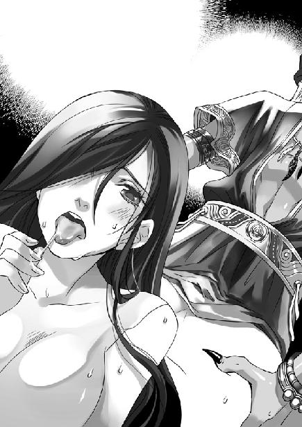

第8集·海王神殿
南荒篇（5/9）
出版日期：2010-03-12
【本集内容简介】
碧海蓝天，和风艳阳，碧鲮海湾的美景，就如同现代的度假海岸，那样的平静，那样的安详。但半夜里突来的大潮却在一瞬间吞噬了整个碧鲮海湾，居住在沙岸竹屋的一行人全被两丈高的海水淹没。为了寻找失踪的祁远，程宗扬与乐明珠意外落水，被卷进了一座荒圮的海王神殿……
谢艺的提议让程宗扬陷入深思，却意外听见竹墙另一边的香艳肉戏，看着阿夕引诱纯真的小紫共享百合情欲，程宗扬也被挑起了兴趣。但当阿夕股间透出血红时，他才惊觉，操控阿夕的人竟无视她的安危，那个人，想让阿夕去死！
※ ※ ※ ※ ※
封面人物：小紫
插图：乐明珠

插图：阿莹
几个人你看我我看你，大眼瞪小眼。
来到碧鲮族之前，谁也没想到会是这种局面：村里所有人都到深海打捞珍珠去了，只留下一个小女孩看家。
说到这个小女孩，众人都流露出痛惜的表情。
标准的一个小美人胚子——这是众人见到她的第一感觉。
活活是白长这么漂亮一张脸蛋——这是众人的第二感觉。
这么精致的一个小美人儿，智力却与脸蛋完全成反比。十四五岁的身体，四五岁的智力，简直是一个悲剧。
为了那株惨死在小紫手下的玉盏铃花，乐明珠还哭红了鼻子。哭完她跑去找到小紫，很认真地告诉她，用开水浇花是不对的。所有的花——不不，豆腐花除外——都只能用凉水来浇。
小紫似懂非懂地听着，最后崇拜地说：“姐姐，你好聪明哦。”
乐明珠发现自己终于遇到了平生第一个知己，大受感动之余，差点要搂着小紫亲一口。
不过对于其他人来说，这是一场不折不扣的灾难。整个村子人迹全无，想找一个有正常智商的人询问一下状况都不可能。
小紫说：村子里的人都去了深海。
小紫说：他们可以住在最靠近海的屋子里，让这些远来的客人享受美妙的阳光和海风。
小紫说：树林里有各式各样的水果，海里有鱼虾，都很好吃。
小紫说：他们去的是深海，要两天之后才回来。
小紫说：树林里没有可以喂马的草，不过海里面有草。可以把所有的马匹都赶到海里，让它们去啃海草。
众人最终婉拒了她这片好意，表示他们的马匹没有那么娇贵。没有草，吃点树叶、水果什么的也能凑合几天。
“可惜了这么个小美人儿……”
连吴战威都在背后摇头叹息，觉得这小姑娘挺招人心痛的。
在闷热酷暑的天气里跋涉数日，每个人的承受力都到了极限。此时眼前是平静的碧鲮海湾，碧蓝的海水在阳光下温柔地起伏着，宛如光滑的丝绸。这一切使商队的汉子们发出一阵欢呼，身上的疲劳仿佛不翼而飞。
吴战威三下五去二把自己扒了个精光，“噗通”一声跳进海中。石刚也不甘落后，他紧跑两步，一个猛子扎进水里，过了差不多两分钟才从远处冒出头来，狂叫一声：“好爽！”
那些剽悍的汉子热闹起来，一个接一个跳进海里。不多时，沙滩上扔满了肮脏的衣物。
“噗通！”
躁热的身体被温凉的海水包围着，深入骨髓的疲累和酷暑一点一点荡去，消散在温柔的海水里，身体轻快得仿佛要飞起来。
程宗扬屏住呼吸，身体深深潜入海中。他不知道自己潜了多久，直到肺部无法承受，才浮上海面，吐了一口苦咸的海水，大口大口地喘着气。
眼前的一幕让程宗扬吓了一跳。海面上浮着一群脑袋。那些汉子脸都朝着同一个方向，一个个张大嘴巴，表情像化石一样。
顺着他们的目光望去，程宗扬也露出同样的表情。
眼前是一片白花花的肉体。那些花苗女子赤裸着雪白的肢体，在碧波间追逐嬉戏，就像一群美人鱼，不时发出银铃般的娇笑声。
出乎所有人的意料，那些花苗人也来了。圆弧状的沙滩无遮无掩，从任何一个角度看去都一览无余。花苗的女子只与他们隔了一段并不太远的距离，就那么解去衣裙，赤条条在水中洗浴起来。
这些汉子里不少都是能百丈外射中鸟眼的好手，那么点距离对他们的眼力来说，相当于完全不存在。这会儿一个个伸着头，呆若木鸡，而那些花苗女子却毫不避讳他们的目光，随意展露出雪白的肌肤和身体美好的曲线。
易彪第一个反应过来，用发干的声音低喝道：“北府兵，扭头！”
一多半脑袋“唰”的一下转了过来，程宗扬好笑地发现，这些天不怕地不怕的汉子竟然红了脸。
云氏商会的汉子都扭过脸，吴战威几个也不好意思再盯着猛瞧，一个个回过神来，讪讪地开始洗浴。远处花苗的汉子们露出善意的笑容，似乎并不在意他们的目光。
在蒸笼一样湿热的盆地里跋涉数日，骨头缝里似乎都在冒出暑气。浸在海水中，舒服得令人不想离开。石刚甚至泡着泡着就睡着了。吴战威拉住他的手臂，把他背到沙滩上。那家伙打着鼾，居然还没醒。
在海里浸泡了大半个时辰，洗去身上的酷热，这些汉子又陷入尴尬的境地。
远处的花苗女子仍在戏水嘻笑，丝毫没有离开的意思。那帮军士上阵杀敌毫不畏惧，但让他们就这么光着屁股上岸，却谁也不敢。八九条大汉蹲在水里你看我，我看你，谁也不敢就这么出去。最后易彪第一个站起来，他用水底捡来的海带缠住腰，顶着远处花苗女子火辣辣的目光，板着脸地走到沙滩上，拾起那堆被荆棘刮破的衣物，丢给同伴。
那些军士如蒙大赦，赶紧手忙脚乱地披上衣服，可拿到手里又不对了。有的人拿了两条裤子，有的捡了三件上衣，还光着屁股，狼狈之态引起远处一片银铃般的笑声。
※ ※ ※ ※ ※
嘻笑声仿佛还在耳边回荡，程宗扬已经换了一身干净衣物，舒舒服服地靠在窗口观看海景。
如果不去考虑肚子里的冰蛊，这是程宗扬在南荒最惬意的一段时光。他们住在临近海滩的竹楼里，房屋用巨大的毛竹搭成，直接建在沙滩上，虽然没有竹篱花墙，但也有成片的椰树。
即使被阳光照射着，楼里仍清凉惬意。粗大的毛竹仿佛被水浸过一样湿凉，将暑日的燠热挡在楼外，背阴处还有几只蓝黑色的海贝。楼内的物品简单而又别致，桌案是用一扇巨大的蚌壳制成，壁上挂着一条大鱼的骨架，旁边还放着鲸骨制成的鱼叉，散发着海洋民族的风情。
祁远对这里还有不放心，怕离海太近，万一涨潮会淹到。但小紫说，村里人怕热，不少都住在竹楼里。又看到楼里有床榻，料想涨潮也没有什么大碍。反正房子都空着，两支商队便各挑了一幢竹楼住下来。
耳边没有听到任何声音，程宗扬却清楚感应到凝羽的气息。这倒不是因为自己修为精进，而是凝羽没有刻意隐藏行踪。
他回过头，看到凝羽换了一件白衣，头发湿湿地披在肩上，像是刚洗浴过的样子。程宗扬不记得她到过海边。即使她去，也不可能和那些花苗女子一样毫不在意地裸露身体。
凝羽看出他的疑惑，“山里面有泉水，小紫领着我和明珠一起去的。”
程宗扬笑道：“她们两个倒能聊到一块去。”
乐明珠难得碰到一个比自己还笨的，对小紫如获至宝，两人你一句我一句，聊得别提有多开心了。聊到一半乐明珠才发现自己脸上还沾着泥污，小紫说山里有清泉汇成的水潭，领着她和凝羽一起去洗浴。
凝羽扬起手，用丝带把散乱的秀发系在脑后。她微微低着头，洁白的手腕在颈侧一翘一翘。这个简单的动作，却让程宗扬心头微荡，禁不住将她搂在怀里，吻了一口。凝羽俏脸微微一红，却没有挣扎。
拥着凝羽香软的身体，程宗扬手指渐渐不安分起来，凝羽脸色也越来越红。
忽然楼下传来一阵怪叫：“哎……哎哟……亲娘咧……”
朱老头趴在竹榻上，两手捂着肚子，一副要死不活的样子，哼哼叽叽叫个不停。
程宗扬没好气地说道：“朱老头，又怎么了？”
“我……我不行了……小……小程子……给老头……打副棺材……千万记得……要……要金丝楠木的……”
“什么？”程宗扬扭过头，扯开嗓子道：“鱼烤好了？先放着吧。”
朱老头“呼”地爬了起来，“哪儿呢？哪儿呢？”
程宗扬抱着肩，斜眼乜着他，“在海里呢。急什么，祁老四已经去打了，再有一两个时辰就该回来了。”
“缺……”朱老头痛心疾首地指着程宗扬，“缺德啊，小程子。我老人家盼口鱼吃，我容易吗我？”
程宗扬忽然露出笑脸，“怎么？你纯洁的感情又被我伤害了？别急，你再听听这个：向导的钱咱们来商量商量？”
朱老头顿时急了眼，“有啥好商量的？有啥好商量的？不是说好了，一天一个金铢。天地良心啊！小程子，你可别赖账！我老人家挣点钱，我容易吗我？”
“大叔，”程宗扬推心置腹地说道：“你看我像那种人吗？”
朱老头看了他半晌，犹犹豫豫道：“有点……像。”
程宗扬脸一板，摆出翻脸的架式。
“别别别……”朱老头连忙堆起笑脸，“大叔知道你心眼实在，为人厚道，绝对不会欺负我老人家。”
“那好。咱们说好的，每天一个金铢。从熊耳铺到白夷族是六天，从白夷族到碧鲮族是五天，一共十一天，十一枚金铢。对不对？”
朱老头鸡啄米似的点着头。
“在熊耳铺先付了一半的定金，三个金铢。对不对？”
“对对。”朱老头眉开眼笑，“那金铢成色还行。”
“算下来一共欠你八个金铢，对不对？”
“嗯嗯。”朱老头连连点头。
“那好，就这样吧。”程宗扬拍了拍手，转身就走。
“小程子！”朱老头一把拉住他，生怕把钱吹跑了一样，小心翼翼地轻声问道：“钱呢？”
程宗扬一拍额头，“把这事儿给忘了。八个金铢是吧。”
“是啊是啊。”
“你放心，我说话算话，这八个金铢，绝对少不了你的。肯定是货真价实的金铢，一点折扣都不打。”
朱老头笑容满面，“那最好那最好。”
程宗扬笑眯眯道：“只要等我换到金铢立刻给你。”
朱老头瞪大眼睛，“啥？”
程宗扬耐心地解释道：“一枚金铢合二十银铢对不对？”
朱老头点头。
“一枚银铢合一百枚铜铢对不对？”
朱老头点头。
“一枚金铢合两千枚铜铢对不对？”
朱老头又点头。
“就是嘛，”程宗扬道：“南荒这破地方，商业太不发达了，还停留在以货易货的原始贸易阶段，有点铜铢就不错了。金铢那么贵重的东西，谁没事带在身上？跟你说实话吧，当初那几枚金铢，我还是找云老哥凑的呢。”
朱老头咽了口唾沫，小心翼翼地商量道：“用银铢也成啊。八枚金铢，二八一十六，一百六十枚银铢，你们商队总是有吧。”
“差不多吧。不过说好的是金铢，我拿银铢凑数那算什么事儿呢？我向来说话算话，说是金铢就是金铢。可别说我蒙你啊，你这会儿把我们商队拆了都成，能找出一枚金铢来，我王字从今往后倒过来写。”
“啥？”朱老头叫了起来，“王字倒着写还是王！咦，不对啊，你不姓程吗？跟王字有啥关系啊？”
程宗扬打了个哈哈，“既然跟姓王的没什么关系，咱们就不说他了。我跟你说，大叔，”程宗扬一脸苦恼地说道：“金铢这东西，我是真没有啊。”
朱老头一张脸拧得跟苦瓜似的，“我不要金铢不行吗？就银铢得了，一百六没有，你给一百五也成啊。”
“瞧你说的。”程宗扬热络地朝朱老头胸口擂了一拳，“你当我什么人？明摆着让你吃亏的事，我怎么能干？你愿意，我还不愿意呢。”
朱老头抱着胸，被捶了半晌才喘过气来，“你的意思是，不给了？”
“可别这么说！我们白湖商馆，讲究的就是‘信义’二字！”程宗扬大义凛然地说道：“欠你的八个金铢，我绝不赖账。今年还不上，明年接着还，明年还不上我后年还，别说十年，就是二十年、三十年，我也给你还清！”
朱老头喘了半天气，然后一把拽住凝羽，哭丧着脸道：“姑娘，你给我评评理，他就这么坑我老人家——世道人心啊。”
凝羽想了一会儿，告诉朱老头，“我觉得他说的挺有道理。”
朱老头脸顿时黑了下去。
凝羽平静地说道：“南荒的路我们都不熟悉。如果没有你带路，我们寸步难行。如果我是他，也不会这样放你走。但我们没有恶意，只要能回到熊耳铺，所有的钱都会一文不少地给你。”
朱老头眼珠转了半晌，勉为其难地说道：“这可是你说的？”
凝羽淡淡道：“如果你不信，可以让他再说一遍。”
“别别别，”朱老头悻悻道：“让那小子说，指不定又变出啥花样呢。”
“喂，乱讲话可是要负责任的。”程宗扬道：“我可没有不守信用。要怪，只能怪你自己没看清合同就答应吧？”
朱老头捂住耳朵，赌气道：“不听不听！”
※ ※ ※ ※ ※
被朱老头这么一搅和，程宗扬满心绮念飞得无影无踪。不多时，祁远等人带着几条大鱼回来。当下众人剥洗干净，用竹枝串起来烤着吃了。
赶了几天的路，这会儿填饱肚子，留下几个人看守马匹货物，其他人都倒头大睡，以补路上跋涉的辛苦。
一觉醒来，天色已近傍晚，金黄的阳光透过窗户，映在淡黄的竹子上，变成浓浓的橘黄颜色。风中带来大海的气息，让程宗扬一时忘了自己身在何处。
凝羽立在窗侧，修长的身影被阳光镀上一道金边，秀发在颈侧轻轻飞舞，融化在夕阳中。
听到背后的声音，她回头一看，只见程宗扬脱掉衣服，又去解裤子，接着拿起旁边的钢刀，不禁失笑道：“你在做什么？”
“到了海边，当然要享受这里的阳光、沙滩和海风了。”
程宗扬将已经扯破的裤腿齐膝割掉，然后当短裤穿上，舒服地跺了跺脚。他倒是想要一条海滩裤，可这个世界估计不太好找，只好拿条旧裤子凑合了。
“来！我们去捡贝壳、捉螃蟹！”
程宗扬拉起凝羽，奔出门去。
海浪轻柔地拍击着沙滩，洁白的细沙被夕阳映得一片金黄，高大的椰树在头顶摇曳着。远处翠绿的岛屿点缀在宁静的海湾中，宛如一块块不规则的翠玉，被海浪掀起的雪白浪花包围着。
海天尽头，一群白色的鸥鸟在空中盘旋，丝絮状的云丝静止般黏在碧蓝的天际，边缘仿佛被夕阳烧炙一样火红地卷起。
程宗扬躺在一片芭蕉叶上，头枕着叶柄，半闭着眼睛，享受着海风的吹拂。凝羽抱着膝坐在一旁，反反复复握住一捧细沙，又反反复复让它们从指间滑出，衣襟间散发出肉体淡淡的香气。
程宗扬舒服得几乎想呻吟。阳光、海滩，还有一个大美女，身边的一切……
“简直就是我梦想中的爱情片啊……”
“什么爱情片？”
“就是……天仙配你知道吧？一男一女，开开心心在一起。”程宗扬拍了拍她的手，“就像我们现在这样。”
凝羽偏着头想了一会儿，眼中露出笑意。
“这样不难受吗？”乐明珠清脆的声音从身后传来。
然后是小紫甜甜细细的声音：“怎么会难受呢？好舒服的。乐姐姐，你也戴一个吧。”
“咦——”乐明珠拉长声音，“我才不要呢，好硬。”
“可这样很凉快啊。”
“咯咯”，林中传来两声硬物撞击的轻响。
两个小丫头叽叽喳喳一边说一边笑，手拉手从林中出来。乐明珠的衣裙也在荆棘丛中撕破了，这时换了一条淡红的衫子，裸着白生生的脚踝，赤足走在沙滩上，踝间的银铃发出碎碎的脆响。
小紫的紫色衫子围在腰间，袖上那条金色的锦鲤缠住纤细的腰身，上身赤裸着，却是用两枚椰子壳做成胸罩，扣住雪嫩的乳房。她一边走一边用小手在胸前拨弄，两枚椰壳碰撞着，发出“咯咯”的响声，让两个小姑娘都嘻嘻直笑。
“姐姐，我给你挑两个最大的椰壳好不好？”
“不好啦。”乐明珠一口回绝，然后又纳闷地问：“为什么要最大的？”
小紫用手在胸前比了一下，“姐姐的胸部比小紫大啊，那么大的奶子，肯定能装好多好多奶水。”
乐明珠小脸顿时涨红，连忙捂住小紫的嘴巴，“要死啊！不许你乱说！”
小紫眼睛一眨一眨，楚楚可怜地看着她。等乐明珠松开手，小紫委屈地说：“人家又没有说错，就是很大啊……”
她泫然欲泣的样子让乐明珠紧张起来，“是我说错了，你不要哭啊。”
小紫收起眼泪，笑逐颜开地说道：“姐姐奶子那么大，用布条束着会不会很气闷？走路的时候呢？会不会很累？”
“哎呀，你不要问了！”
“还有啊，趴着的时候压到会不会很痛？”
“自己的肉怎么会痛！”
被乐明珠一吼，小紫又泫然欲泣起来。乐明珠赶紧贴在她耳边，咬着耳朵说了几句，才哄得她高兴。
乐明珠已经是难得的绝色，她旁边的小紫竟然毫不逊色，她脸颊是漂亮的瓜子形，鬈曲的秀发用一支尖螺簪住，小巧的下巴微微尖出，阳光下，白嫩的脸颊宛如凝脂。长长的睫毛又弯又翘，衬着秋水般的美目，一眨一眨显得可爱之极。
她嘴巴小巧柔嫩，红润的唇瓣细细软软的，一笑就弯翘起来，笑容像婴儿一样天真无邪。连凝羽都禁不住脱口而出，“好漂亮的小姑娘……”
不过看到小紫胸前那对椰子壳，凝羽又是好笑，又是怜惜，小声道：“真是个傻丫头，怎么能这样穿？”
程宗扬来到这个世界还是第一次见到女人用胸罩，没想到竟然是椰子壳制成的。小紫身材娇小，两枚大大的椰子壳扣在胸前，边缘露出乳房雪嫩的肌肤，让人想起雪白香甜的椰肉。
两个少女娇靥如花，裸露的手臂和小腿洁白如玉。夕阳的光芒下，能看到两个小女孩粉嫩的脸颊上那层纤软的细毛，俨然是两个还未成年的美人胚子。
程宗扬看得出神，这样一对漂亮的小萝莉手拉手在沙滩漫步——他赞叹道：“这简直是入江纱绫和未成年的星野亚希一起拍摄的写真片啊！”
“什么？”凝羽没听懂。
程宗扬脱口而出，忘了自己是在另一个时空。不过说实话，乐明珠胸部的真实尺寸比入江纱绫还大一些，至于小紫，则更加天真纯美……
他笑着摇了摇手，然后把手指放入口中，用力吹了声口哨，引得两个小丫头一起回头张望。小紫掩着嘴咯咯直笑，乐明珠却把手指放在眼睛下面，吐出舌头，朝他做了个鬼脸。
凝羽微笑着，从唇角逸出一缕低语，“后面有人。”
※ ※ ※ ※ ※
身后是一片椰林，静悄悄没有一个人影。
程宗扬疑惑地回过头，凝羽指了指，“那边。”说着忍不住偷笑道：“他们以为我们看不到。”
两棵并生的椰树紧紧挨在一起，隐约能看到树后露出的身影。虽然大半身子都被挡住，但那两人的体型不需要第二眼就能辨认出来。那么魁伟雄武的身形，除了武二郎没有第二个人，另一个高挑丰挺的，不用说，肯定是苏荔。两人紧紧拥在一起，依稀能看到耳鬓厮磨的动作。
程宗扬翻过身，一边张望，一边笑道：“你不看看吗？这可是激情片啊。”
凝羽忍俊不禁，却怎么也不好意思回头。
“越来越火辣了……嚯嚯，真看不出，武二这粗胚还是舌吻高手呢。”
椰树后露出苏荔雪白的颈子，武二郎两手捧着她的玉颊，埋头亲吻着她的红唇。他肩头的肌肉一鼓一鼓，颈中的虎斑不住跳动，显得张力十足。
程宗扬赞道：“二爷这体格真够威猛的，连亲个嘴儿都这么威风凛凛，不知道的还以为他要把人家苏荔活吞了呢。”
苏荔肩上缠着鲜红的丝绸，扬手拥住武二郎的脖颈，裸露的双臂洁白如雪。武二郎动作越来越用力，忽然苏荔肩上红绸一松，滑落下来，露出白美的香肩。
“快瞧，”程宗扬碰了碰凝羽，压低声音道：“已经是三级片了……”
凝羽忍笑道：“什么是三级片？”
“露两点的就是。嘿嘿，你猜武二这会儿在亲什么呢？”
凝羽低着头，吃吃笑着，耳根微微发红。
武二郎和苏荔所在的位置很隐蔽，可他们的体型太过出众，虽然椰树遮住了主要部分，仍能看到他们侧面的动作。
乐明珠和小紫手拉手在海滩上捡贝壳，还比赛打水漂，不过这两个小丫头智力相仿，打水漂的技术也在伯仲之间，半天才打出来一个二连的，还高兴地手舞足蹈。
程宗扬推了凝羽一把，“小心，别让那两个丫头跑过来。”
“怎么了？”
“这边都十八禁了，可不能让未成年人看到。”
凝羽挑起眉，“我越来越听不懂了……什么是十八禁？”
“就是……你知道十八摸吧？”程宗扬小声笑道：“他们俩这会儿做的就是了。”
椰树后的身影收了回去，只留下地上一条委弃的红绸。片刻后，一条洁白的手臂伸出，抱住椰树。
虽然看不到他们的具体动作，但完全可以想象，苏荔这会儿的姿势应该是背对着武二郎，两手抱住树身。至于她蔽体的衣物，这会儿正在地上被风吹得卷起。
程宗扬强忍住吹口哨的冲动，二爷这是真猛，真枪实弹就打上野战了。如果这会儿丢个椰子过去，不知道武二爷会是什么表情。
忽然白影一晃，一条雪白的玉腿从树侧伸出。苏荔身材高挑，有一双傲人的修长美腿。接着一只大手伸出来，贴在苏荔大腿白腻的肌肤上，然后沿着她大腿柔美的曲线，一路抚摸着伸到膝弯。
苏荔手臂抱着椰树，浑圆的大腿被托得抬起，大腿内侧紧紧贴着树干。她肌肤充满了花苗女子动人的白皙，阳光下犹如春雪。她柔润的大腿下那条粗壮的手臂却孔武有力，仿佛金属铸成，在阳光下泛起古铜色的光泽。
苏荔玉膝高举，白生生的大腿贴在树干上，小腿低垂下来，雪白而纤美的玉足悬在半空，忽然猛地绷紧。
武二郎一手托着苏荔的大腿，雄壮的身躯从后面顶住她曲线动人的肉体，把她压在椰树上。随着身体的动作，那串银铃在苏荔脚踝上一晃一晃，反射出阳光明亮的光线。
“啪”的一声，手背被人打了一掌。程宗扬回过头，才发现自己不老实地摸到了凝羽的大腿上。
凝羽忍着笑，把他手臂推开，低头拂着衣裙。
程宗扬笑着翻身坐好，“这会儿已经是Ａ片了，还是无码的。”
说笑间，又一个人影出现在沙滩上。程宗扬的笑容一下僵在脸上。
那人没有穿上衣，上身的肌肉结实而紧凑，像大理石雕刻一样完美，没有一丝赘肉。他左手拎着一颗椰子，右肩扛着一张竹椅，下身穿着一条货真价实的海滩裤，上面鲜艳的色彩，竟然还是花的！
眼前这一幕程宗扬再熟悉不过，到海滨度假的休闲游客们，通常都是这副打扮。可自己这会儿不在垦丁，而是天知道在哪个时空的海滩上。眼前这家伙也不是来度假的休闲游客，而是那个让人永远摸不透的谢艺。
一副现代休闲打扮的谢艺放下竹椅，然后变戏法一样掏出一副大墨镜戴在脸上，舒舒服服地躺了下来。
凝羽又是好笑又是奇怪，“他怎么打扮得这么古怪？”
程宗扬看着谢艺，只见他一手托起椰子，右手不知从哪儿拿出一根麦管，随手刺穿椰壳，喝了一口，然后把椰子放在沙滩上，舒服地躺直身体，两手枕在脑后，悠闲地看着海景，一副轻松惬意的神情。
如果说谢艺的装束让程宗扬生出回到以前的错觉，用麦管刺穿椰壳，又让程宗扬回到现实。
“他是受了某个人的毒害，别理他。”
凝羽笑道：“这算什么片？”
程宗扬撇了撇嘴，“就是基佬最喜欢看的那种片。”
“什么是基佬？”
“基佬——”程宗扬充满恶意地猜测道：“很可能就是谢艺的真实身份。”
墨镜遮住了谢艺的眼睛，但程宗扬能感觉到那家伙悠闲的外表下，心神却没有丝毫放松，墨镜下的视线一直追逐着海滩上嬉戏的女孩。
“这是什么？”程宗扬毫不客气地摘下谢艺的墨镜，在手里把玩着，“玻璃的？”
谢艺没有动怒，他拿起椰子饮了一口，“烟茶水晶。”
“怎么？你那位岳帅不会做玻璃吗？”
谢艺淡淡道：“你会吗？”
程宗扬把墨镜架在鼻子上，过了会儿道：“玻璃没什么难做的。”
谢艺点了点头，“岳帅也是这么说的。”
“哦？他做出来了吗？”
谢艺很自在地双手抱头，翘起腿，“岳帅用了十年时间，花了七万金铢，最后把云氏的玻璃坊买了下来，才做出第一块像样的玻璃。”
“云氏的玻璃坊？”程宗扬没有听云苍峰说起过。
“云氏就是靠玻璃起家的，但他们的玻璃坊做出的玻璃都带有绿色。岳帅说，可以把玻璃做得像上好的水晶一样透明，还可以贴上银箔，制成比铜镜强上千倍的镜子。但终究没有做出来。”
程宗扬皱眉道：“玻璃哪有这么难做？”
谢艺微微一笑，“莫非程兄知道配方？”
玻璃和塑料一样，都是程宗扬最熟悉不过的物品，但用过和做过完全是两码事。他想了半天，凭借一点模糊的印象道：“用石英石加碱不就烧出来了？”
谢艺失望地靠回竹椅，“岳帅让人烧制草木灰，再与沙子混合，烧制出的物品虽然近似玻璃，但较之云氏玻璃坊所产大有不如。后来有商人从极西之地贩来玻璃镜，岳帅有意派人前去购买炼制配方，可惜未能成行。”
程宗扬一阵惭愧。说起来简单，可单是碱和石英，自己就不知道该到哪儿去找。在他印象里，烧制玻璃是一件很简单的事，却从未想过一门技术从诞生到发展，从来都不容易。那位岳帅想必和自己一样，以为烧制玻璃不是难事，结果耗费了十年时间、七万金铢，仍一无所得。
程宗扬摘下墨镜，在手里晃着，“这也是岳帅的主意吧？”
“当日岳帅戴着墨镜纵横沙场的英姿，令所有看到他的敌人都为之胆寒。”
“这位岳帅还真会扮酷。啧啧，打仗还戴墨镜。”
谢艺淡淡道：“其实岳帅是晕血。”
“什么？”
“没有想到吧？”谢艺拿过墨镜，“这是岳帅最大的秘密。谁会知道纵横不败的武穆王，其实连杀鸡都不敢看。如果不戴墨镜，血肉横飞的战场，他连一刻也待不下去。”
“晕血？你在搞笑吧？那他为什么要上战场？”程宗扬才不相信他是为了什么崇高的道义。作为一个穿越者，天知道他的民族和国家是哪个。
“他说，他想穷尽一生的可能性。”谢艺看着手里墨镜，露出一丝缅怀的目光，“可人的一生太短暂了，即使是武穆王，也有死去的一天。”
程宗扬拿起椰子，上面插的果然是一根平平常常的麦管。他不客气地拧掉谢艺喝过的一截，提起来喝了几口，然后道：“喂，别装了。你不就盯着人家小紫看吗？怎么，是不是跟你要找的那个女人很像？”
谢艺没有回答。
程宗扬打量了一会儿，“看她的年龄，岳帅死的时候她多半还没出生吧。”
“岳帅走前遣散了姬妾。那时我们不知道还有人有孕在身。”
“遗腹女？”程宗扬眼珠转了一会儿，“那时候还没生下来，你怎么知道她带的是个女儿？”
“岳帅生下的都是女儿。”
“什么？”程宗扬不明白，难道那个岳鹏举还能决定自己生男生女？
谢艺简短地答道：“他说是辐射。”
程宗扬心头像被什么东西碰了一下，似乎触摸到某件缥缈虚无的事情。
谢艺站起来，朝小紫走去。
小紫捡了只贝壳正在手里玩着。谢艺蹲下来，在与小紫说些什么。他的花短裤大墨镜，看上去就像出没于海滨的怪叔叔。小紫时而点头，时而摇头，时而捂着嘴咯咯直笑。
谢艺脸上看不出高兴或者失望，他静静看着小紫，似乎想从她身上找出那个人的痕迹。
※ ※ ※ ※ ※
夜色深沉，万籁俱寂。空荡荡的竹楼仿佛掏空的盒子，在夜色下沉睡。
同样是空无一人，这里与蛇彝人的村庄完全不同。蛇彝人的村庄弥漫着死亡的气息，而碧鲮族却一片宁静。这让程宗扬安心不少。
一点淡淡的白光在瞳孔中微微跳动，程宗扬拂起凝羽的长发，看着她雪白的面颊在自己腰腹间起落。
凝羽不介意用嘴巴和手指帮助程宗扬释放欲望，却异常坚决地拒绝他进入自己体内。
程宗扬不明白她为什么这么在意乐明珠的话——那个小丫头连什么是男人都不了解，凭什么来指点两个成年人该怎么做？可对凝羽的坚持，他也无法强迫。嘴巴就嘴巴吧，程宗扬安慰自己。
凝羽软腻的舌尖在龟头上转动着，唇瓣裹住棒身来回舔舐。那种温柔而妩媚的美态，让程宗扬越看越爱。
窗外圆月渐渐升至中天，远处潮汐的声音如同奔腾的战马，在月夜下驰骋来去。碧鲮海湾是一个月牙状的海湾，湾口被两座尖刀似的山脉阻隔，又排列着一串岛屿，潮水只能在外面拍卷，很难越过山脉与岛屿组成的链条，因此碧鲮海湾一直显得十分平静。
竹楼里放着一盏油灯，那是房间的主人留下的。蚌壳制成的灯盏中，一点淡淡的光芒微微闪亮。
忽然，身下的竹楼一动，那力量远比海风要大，似乎连地基也为之摇撼。程宗扬抬起眼，只见月光下，一道数米高的水墙凌空扑来。接着竹楼沉重地一晃，随即被海浪吞没。
程宗扬来不及开口，身体已经被海水浸没。粗大的毛竹在潮水的压力下发出“吱呀”的声音，整座竹楼都为之倾斜，却没有倾颓，最初的冲击力过后，又渐渐复原过来，显示出惊人的韧性。
程宗扬一手抱住凝羽，身体在水中浮起。这时他才发现，海浪虽然有着可怕的高度，却不是直接拍来，而是呈梯形由下而上淹没了整座建筑。在自己看到海浪的时候，潮水已经涨到脚下。
“大水！”
不知是不是因为竹楼建得分外坚固，海浪虽然大得可怕，却没有造成太大的破坏。不仅竹楼没有倾颓，连房间里那些蚌壳制成的家具，挂在墙上的鱼骨，竟然都是固定过的。虽然竹楼在潮水冲击下变形，那些简单的陈设却没有移动。甚至连油灯都保持着本来的亮度。
无数气泡从竹楼的缝隙中涌出，短暂的异响过后，变形的竹楼恢复了原状，所有的陈设仍在原处，连油灯也未曾熄灭。如果不是身边的空气换成了蓝色透明的海水，程宗扬会以为它们本来就该如此。
程宗扬与凝羽对视一眼，彼此都有无数惊疑，但这会儿谁也无法开口。两人手挽手，从窗户钻出，竭力向上游去。
“噗……”
程宗扬吐了一口水，只见眼前一片汪洋，所有的沙滩、椰树都消失了，海面已经与远处的村庄平齐。海面上，一个又一个浪头打来，丈许高的波涛拍在礁石上，发出巨大的轰鸣声，却正好差了少许，没有淹没到那些带有竹篱的房屋。
越来越多的杂物漂浮到海面上，都是南队携带的用具和货物，却没有一件是碧鲮村里的物品。
程宗扬忽然明白过来。房屋里所有的物品都被固定过，碧鲮族人之所以要花费这样的力气，是因为这些建在沙滩上的竹楼本来就会被海水淹没。
浑圆的明月悬在天际，月光下，怒涨的潮水与日间的平静完全不似同一个海湾。波涛拍在礁石上，发出巨大的轰鸣声，仿佛要将岸上的村落吞没。
这场潮水突如其来，商队大多数人都在睡梦中被海浪吞噬。想到水中的云苍峰、祁远等人，程宗扬心里就一阵发寒。如果不是因为自己和凝羽缠绵，这会儿也被海浪吞没了。唯一值得庆幸的是，花苗人选择的住处在沙滩以外，连同看守马匹的小魏躲过了此劫。
“去叫武二！”程宗扬把凝羽朝岸边推了一把。
“你呢？”
“我去找云老哥！”程宗扬叫道：“这么大的浪，我游不过去！快！”
凝羽深深看了他一眼，“等我！”说着返过身，箭矢般朝岸上游去。
程宗扬深深吸了口气，俯身潜入水中。海面波涛翻涌，海面以下却显得异常平静。两层高的竹楼全部被海水淹没，四周都是茫茫海水，使他辨不出方向。
忽然，一点微弱的灯光透入眼帘，那盏完全浸在海水中的油灯竟然还没有熄灭。程宗扬顾不得去想它为什么还在亮着，也顾不得去想为什么会突然涨潮，立刻屏住呼吸朝那盏灯光游去。
祁远、吴战威、石刚、云苍峰、易彪……两支商队大多数人都在水下。程宗扬不敢奢望他们会和自己一样逃过一劫，事实上，几乎所有人都因为疲惫而早早入睡，能够逃生的机会微乎其微。
程宗扬先找到那盏亮着灯光的竹楼，攀着竹竿朝水下潜去。竹梯下是祁远和朱老头的住处，程宗扬伸手去摸，却摸了个空。
忽然，一只手紧紧抓住他的手臂。吴战威额头青筋凸露，手指铁钩一样拧着他的手臂，一手朝他打了个手势。程宗扬不敢耽误，立刻拽着他朝海面浮去。
吴战威大口大口吐着水，半晌才透过气来，嘶声骂道：“直娘贼！”
程宗扬见他没事，立刻又潜入水中。程宗扬知道自己的潜泳技术很烂，但比起以前，至少气脉悠长了许多，刚才下潜的一趟，他估计时间超过了三分钟。如果在以前，自己肯定撑不了这么久。
祁远和朱老头多半被海水冲走，石刚也不知去向，程宗扬不再潜进楼中去寻找，转身往云氏商会的住处游去。
云氏商会包括云苍峰在内一共是九人，除去与小魏一同看守马匹的易建，有八人都在竹楼里。程宗扬一口气潜进水底，心头越来越着急。
途中有两名北府兵的汉子与程宗扬擦肩而过，但自己根本无法开口询问云苍峰的下落，只能给他们指了指方向，让他们自行逃生。这段时间想必还有人会和他们一样从楼里逃出来，但云苍峰远比不上那些精悍的汉子，随着时间一分一秒地流逝，他生还的可能性也越来越低。
楼内早已灌满海水，空无一人。程宗扬搜索片刻，然后攀着竹梯朝上游去。楼上毛竹制成的房门紧关着，他推了几把，没有推开。这时一口气已经用得差不多了，胸口烦闷欲裂。虽然知道这趟如果找不到，只怕永远也找不到了，程宗扬也只好放弃，先浮上海面换气。
忽然，竹墙上一根毛竹向外鼓起。程宗扬停下来，看着粗大的竹竿被一股大力撞得变形，片刻后毛竹无声地从中断开，接着易彪剽悍的身影从缝隙中显露出来。
※ ※ ※ ※ ※
易彪怒目圆睁，眼珠底部因为缺氧迸出细小的血点。他用肩膀撞开竹墙，一手拖着云苍峰，只看了程宗扬一眼，就拼命向水面游去。程宗扬连忙跟上去，一手拽住云苍峰的腰带，帮易彪分担一部分压力。
云苍峰垂着头，花白的头发在水中飘浮着。易彪面色狰狞，他脸颊被竹刺划破，冒出一串殷红的血丝，随即融化在海水中。他强撑着往上游去，动作越来越缓慢，越来越迟钝。
眼看水面越来越近，已经能看到海面的月光，易彪却仿佛耗尽了最后一丝力气，口鼻中冒出一串气泡，身体不由自主地往下沉去。
程宗扬顾不得多想，一把抓住易彪的肩膀。这么一抓，他立刻发现坏了。在水中昏迷与半昏迷完全是两码事。已经昏迷的云苍峰在海水的浮力下显得很轻，而易彪不但重得像一块铁，还本能地抓住程宗扬的手臂，把他也带得往下沉去。
程宗扬游泳技术一般，潜泳更是平常，只提着云苍峰一个人还好些，勉强用一只手划水。这时两手都被占着，只靠踩水根本带不动这两个人。眼看飘浮着月影的水面近在咫尺，却被带得越离越远，程宗扬心里暗暗叫苦。这样下去，非但救不了他们两个，连自己也要被拖下水，三个人手拉手去见海龙王了。
急切间，一只手臂从天而降，破开水面的月影，一把抓住程宗扬的肩膀将他提出水面。
谢艺仍穿着那条招摇的花短裤，他俯身将三个人一一拉了上来。他脚下踩的不是小船，而是两根毛竹，海浪打来，谢艺身体只微微一晃，在光溜溜的竹竿上稳若磐石。
碧鲮族虽然生活在海畔，整个村子却找不到一条小舟。谢艺不知从哪儿拆了两根竹子，拿藤条用拴马结捆在一起，匆忙赶来海上。真不知道这滔天海浪中，他怎么操纵竹竿划过来的。
吴战威抱着竹竿尾部，脸色煞白。他水性比程宗扬还差，这会儿抱着毛竹，能不沉到水下就是万幸。这时，另外两名云氏商会的汉子也在远处露出头，挣扎着朝这边游来。
程宗扬一口气憋得太久，这会儿只觉得眼冒金星，半晌才喘过气来，立刻问道：“凝羽呢？武二呢？”
“浪太大，他们和我分开了。”
谢艺用膝盖顶住易彪的小腹，让他把水吐出来，一边伸手在云苍峰背脊上飞快地推拿敲打。
程宗扬喘了几口气，转身又往水下潜去。谢艺喊道：“做什么？”
“祁老四还在下面！”
谢艺叫道：“没用了！”
祁远这一路帮了自己不少忙，可以说如果没有他，自己肯定走不到这里。程宗扬道：“是死是活，我也要去看一眼。”
吴战威抡了碍事的衣服，沙哑着喉咙道：“你歇着！我去！”
程宗扬没好气地说道：“抱好你的竹竿！照顾好云老哥就成！”
谢艺把云苍峰递给已经缓过气来的易彪，“我和你一起去。”
两人并肩潜到水下，程宗扬才发现谢艺水性不是一般的好，几乎没看到他怎么动作，就箭矢般朝水下的竹楼游去，速度比自己快了一倍。
程宗扬屏住呼吸，在水中竭力睁大眼睛。靠近竹楼时，他看到一个熟悉的身影——朱老头两手抱着一只中午吃剩下的大海螺，以狗刨的姿势在水中扑腾着，两条腿一刨一刨，姿势要多难看有多难看，裤子都快被蹬得掉下来。他狗刨一会儿，把海螺按在脸上喘两口气，然后再接着玩命地狗刨，速度居然也不慢。
祁远那句话，这老家伙黏上毛就是活猴。这么大的水居然也没淹死他。程宗扬正闷得难受，擦肩而过的时候伸手抢过海螺，一口把里面的空气吸尽，然后伸出四根手指，朝朱老头比了比。
朱老头一脸心痛地抢过海螺，不管三七二十一扣在脸上，一只手朝程宗扬胡乱摆了摆，表示自己没有见到祁远。
这边谢艺游鱼般钻入竹楼，片刻后那点灯光一闪，被他拿起来，然后朝楼下游去。
※ ※ ※ ※ ※
如山的海浪涌来，重重扑在礁石上。一群人神情委顿地躺在岸上，浪花倾盆大雨般洒在身上，却没有谁愿意挪动半步。易彪呛得最重，他肺部受了伤，虽然肚里的水已经吐干净了，却不时咳出血丝。相比之下，云苍峰还算幸运，只灌了一肚子的水，昏迷了不短时间，醒来后竟然没有什么大碍。
在海浪中折腾了几个时辰，众人都已经精疲力尽，这会踏上实地才感到害怕。居住在海边，涨潮并不意外，但这样全无预兆地突然涨起两丈高的潮水，完全超乎任何人的想象。
不久，苏荔与武二郎一前一后浮出水面，身后正好一个大浪打来。武二郎张臂抱住苏荔，弓起背脊，若无其事地承受住海浪一击，顺势落在岸上，动作干净利落，引得几名花苗汉子都竖起大拇指。
苏荔从他肩间挣开，一边拧着湿淋淋的长发，一边抬头望着天际的明月，过了会儿才蹙眉道：“今天是十六吗？”
武二郎连忙道：“十七。”
整个白天，碧鲮海湾都一片安详，温暖的阳光，和煦的海风……让他们误以为这些建在海边的竹楼十分安全。没想到入夜后潮汐会突然猛涨，睡梦中的人们甚至来不及逃避。
经历过南荒的毒蛇和沼泽之后，商队却在这貌似平静的海湾遭受了进入南荒以来最惨重的损失。全无准备的他们在短短一刻钟之内就被潮水吞没，包括朱老头在内，最后逃生的只有一半。失踪者除了云氏商会的四名护卫，还包括白湖商馆的祁远和石刚。
“早该想到的！”朱老头嚷嚷道：“都不想想，要不是这么大的浪，咱们隔着几十里能听到？”
这老家伙命好，刚冒出水面就遇到赶来的凝羽，等程宗扬回到岸上，他已经捧着刚煮出来的热汤喝了半碗。朱老头这会儿得了便宜还卖乖，顿时引起众怒，众人都把目光投向这个老家伙，毫不掩饰地露出怒意。
朱老头明显感受到这些目光的压力，他小心地蹲下来，强撑着小声道：“咋了咋了？”
“朱老头，”程宗扬沉声道：“你明知道会有这么大的潮水，还让我们住在海边上？”
朱老头咽了口唾沫，哭丧着脸道：“天地良心啊，我可不是故意的。谁会想到这鬼地方潮水会这么大？不信，不信你问云老板。”
云苍峰神情萎靡，慢慢说道：“满月时，潮水通常会大一些。可这样大的潮水……莫非是大潮？”
朱老头一拍大腿，“可不是嘛！每隔十八九年，就有这么一遭大潮。这次咱们可算来着了，两三丈的潮水，天底下哪儿找去？”
朱老头说的大潮是天文大潮，太阳与月球引力形成一线，使潮汐猛涨数倍，一般隔十九年出现一次。
“上次大潮是十六年前，时间还没到。”谢艺说着从怀中摸出一盏油灯放在沙滩上，“那些竹楼，本来就是建在水里的。”
蚌壳制成的灯盏很浅，里面没有灯芯，也没有灯油，只有一块蚕豆大小的物体，微微发着光。
“如果我没有看错，这是碧鲮人从夜叉珊瑚深处采到的海光礁。只有经常用海水浸泡过，才会放出光明。”
程宗扬想起楼内放置牢固的物品，建造竹楼的人很清楚它们会被潮水淹没。
乐明珠与小紫手拉着手跑来，她看了看程宗扬，“喂，你没事吧？”
程宗扬摇了摇头，然后对着一脸天真无邪的小紫挤出一丝笑容，“潮水平常都这么大吗？”
“嗯。”小紫用力点了点头。
程宗扬压抑住心头的愤怒，“为什么把竹楼建在会被淹没的地方？”
“因为在海里睡觉很舒服啊！”小紫天真地说：“睡在海里一点都不热，而且还会浮起来，像睡在云彩上一样。”
“你们有鳃。”谢艺紧盯着小紫道：“是吗？”
“是啊。你们没有吗？”
程宗扬、吴战威、易彪都露出受人戏弄的表情。鳃？哪个孙子有鳃！
谢艺温和地笑了笑，“没有。”
“你们看起来和我们一样啊，”小紫不解地眨着眼，“为什么会没有鳃？”
这个问题很难回答，谢艺看了她片刻，“什么时候退潮？”
小紫伸出白嫩的手指，“喏。”
当第一缕晨曦出现在海面上，汹涌的潮水平静下来，然后迅速退去。首先露出的是椰树的树冠，接着是潮湿的竹楼。
“直娘贼的！”吴战威骂道：“我总算知道这楼怎么这么湿了！”
不等白色的沙滩露出，几个人就跳进水中，寻找失踪的同伴。
两名云氏商会的护卫首先被发现。他们被卡在竹楼的角落里，早已失去生命的迹象。另一名护卫伏在沙滩上，他两手紧紧抓住地面，指缝里满是沙子。
众人神情惨然。这名护卫本来有力气逃生，他好不容易离开竹楼，却在海中失去方向感，把水底沙滩的反光误认为水面，临死还紧紧抓住那些致命的沙子。
他们找到三具尸体，另外三个人却不见踪影。
忽然有人指着椰树顶端，“那是什么？”
小魏攀着树干爬了上去，片刻后拎起一只葫芦，“是四哥的酒葫芦！”
众人心底顿时燃起一丝希望，祁远的酒葫芦既然在这里出现，很可能他也从竹楼逃脱，却因为海浪太大而被冲走。
祁远虽然功夫平常，为人婆妈了些，却是商队中不可缺少的人物。有他在，众人都仿佛心里有了底。他知道什么地方最适合宿营，怎么躲避瘴气，哪种水果可以吃，猎物烤到什么时候火候正好，临睡前还有热水泡脚……
“扎竹筏！”程宗扬道：“去海里找！”
※ ※ ※ ※ ※
“呃……”
吴战威满脸鼻涕眼泪地攀在竹筏边上，伸直喉咙，胆汁都快吐了出来。他水路走过不少，这海上的勾当还是头一遭。程宗扬本来想让他留在岸上，吴战威却怎么也不愿意，结果一个浪头涌来，他就晕了，强撑着划了几里，这会儿吐了个天昏地暗，头都快伸到了水里。
“只一下！一下就好！”
乐明珠在他身后拿着银针跃跃欲试。
吴战威拿手背抹了抹嘴，喘着气道：“我说妹子，你就饶了我老吴吧……这都九针了。”
乐明珠撇了撇嘴，“胆小鬼！”
朱老头一脸的不屑，“你也是七尺多高的汉子，那针跟头发丝儿似的，就能扎得你鬼哭狼嚎？小吴子啊，我跟你说，我老人家是不晕船，我要晕船，九针算什么？再来一针，凑个整儿多好！”
吴战威被他调侃得抹不开面子，只好豁了出去，“妹子！咱们说好的，最后一针！”
乐明珠立刻高兴起来，眉开眼笑地说道：“人中、合谷、上脘、中脘都扎过了。这次试试内关穴！”
吴战威神情惨然地伸出手臂，乐明珠帮他卷起衣袖，在他手臂正中按着，一边小声嘀咕道：“胁疼肋痛针飞虎，胸满腹痛刺内关。内关属手厥阴心包经，位于掌后二筋之间，腕上二寸之后……”
程宗扬听得好笑，这丫头不会是临时抱佛脚，拿吴战威练手的吧？
乐明珠终于认准穴位，一针下去。吴战威牙关“咯”地咬紧，额头青筋直跳。
“快了！快了！”乐明珠飞快地捻着针。她手法精妙，认穴也极准，就是下手的分寸差了少许。吴战威强忍片刻，接着“嗷”的一声，放声嘶嚎起来。
程宗扬忍不住道：“乐丫头，你就给老吴个痛快，一针扎死他得了。”
吴战威一把拽了针，捧着手臂，额头滚出黄豆大的汗珠，厉声道：“姑娘真是好手段！吴某此时神清气爽！受教了！”
“你瞧你瞧！”乐明珠眉飞色舞地说道：“他不再吐了吧！”
“可不是嘛。再让你扎两下，他就该吐血了。”
“小心！”易彪一荡木板做的船桨，避开水中的漩涡，说话间嘴角溅出几星血沫。
众人分成四组，往海里去寻找祁远等人。作为队伍里最强的几人，谢艺、武二郎和凝羽各自跟随一艘竹筏。程宗扬则和乐明珠、吴战威、易彪、朱老头分在一组。说起来他们这一组实力也不弱，但吴战威水性比早鸭子强得有限，易彪水性好一点，可他在水中呛伤了肺，每次呼吸都牵动伤势，结果落到了最后。
碧鲮海湾看似平静，临近岛屿的地方却有许多漩涡，几个人手忙脚乱地撑开筏子，忽然“嘎”的一声，竹筏底部发出刺耳的声响。
“礁石！”程宗扬脑中闪过一个念头，接着竹筏上捆扎的棕树皮便即绷断。
程宗扬一把拽住松开的棕皮，却见一片隐藏在海面下的黑色礁石利刃般从竹筏间划过，一阵“嘣、嘣”声响过，竹筏裂成两个。
那竹筏是用九根粗大的毛竹结成，为保证安全，每三根毛竹捆在一起，最后再结成一整条竹筏。吴战威趴在筏子尾部，易彪、朱老头靠在一边，他们三人占着较大的一半。这时被礁石划断的地方靠近右侧，程宗扬虽然抓住一截棕树皮，但管不了后面，最右面的两根毛竹随即松开，他和乐明珠两人脚底一滑，落入水中。
吴战威与易彪应变极快，立刻抄起手边松开的那根毛竹，竭力朝两人递来，喝道：“抓住！”
程宗扬一把拉住哇哇直叫的乐明珠，伸手去接，突然间脚下传来一股巨大的吸力，两人身体一紧，身不由己地被吸入漩涡。
吴战威和易彪惊骇的眼神一闪而过，眼前随即被碧蓝的海水覆盖。程宗扬深吸了一口气，拼命睁大眼睛，想攀住水下的礁石。
海水中升起无数细小的气泡，隐隐能看到身后的礁石间有一个狭窄的缝隙，海水正迅猛地朝缝隙中涌去。
程宗扬落水前先吸了口气，乐明珠就没有他那么好运，已经“咕咚咕咚”喝了好几口海水，本能地死死抱住他的手臂，两脚乱踢。
那道黑暗的缝隙越来越近，两侧的礁石似乎在隐隐浮动。程宗扬稳住心神，接近缝隙时，立刻伸手想抓住礁石。忽然手上一软，仿佛无数发丝从指上掠过。礁石上长满了不知是海苔还是海藻的植物，又细又长，抓上去滑不溜手，手指只在礁石上一碰，身体便没有丝毫停滞地被吸入缝隙。
黑色的礁岩在眼前飞快滑过，仿佛没有尽头。胸口越来越闷，吸入的那口气在肺中滚动着，胀开般作痛。程宗扬竭力想抓住些什么，手指划过的只有漂浮如细丝的藻类。
几次挣扎都没有奏效，眼看一口气就要用尽，程宗扬不禁露出苦笑。比起段强，自己还算幸运，至少又多活了这么久。两个人同时穿越，一个埋骨草原，一个死在海底，还真够般配。
乐明珠已经不再挣扎，娇小的身体似乎随时都会漂开。程宗扬一手把她搂在胸前，下巴压着她秀发上毛茸茸的朱狐冠，一手护着头脸，朝黑暗的海底沉去。
在失去意识前，程宗扬脑中升起最后一个念头：虽然这段生命如同泡影般不真实，但就这样死去，未免太不甘心了……
※ ※ ※ ※ ※
小腿一阵剧痛，将程宗扬从昏迷中唤醒，接着背脊重重撞在坚硬的物体上，“呃”地吐出一大口海水。
一缕光线从头顶透入，映出眼前涟涟水光。自己半躺在水面上，背后是坚硬的岩石。不远处，一只裂开的牡蛎壳嵌在石上，锋利的边缘沾着血迹。
程宗扬手臂一动，发现那个小丫头仍贴在自己胸前，两手紧紧搂着自己的腰背。她灌了不少水，这会儿还昏迷不醒，眼睛紧闭着，雪白的脸颊毫无血色，湿淋淋的头发上，那圈白茸茸的狐毛散发出朦胧的光泽。
程宗扬一边把她从水中拉起，一边吃力地抬起身。眼前是一个倾斜的空间，对面的岩壁倾倒过来，斜架在身后的岩壁上，似乎随时都会倒塌。背后的岩石覆盖着厚厚的苔藓，仿佛湿透的海绵。
程宗扬试着撑起身体，指尖触到一道刻痕，他低头看去，不由怔了一下。隔着苔藓与海藻，仍能看出人工雕刻的痕迹，一道道弯曲犹如鱼鳞。沿着礁石上的刻痕看去，他发现身下这一整块岩石都被雕刻成鱼尾的形状，一直延伸到海水深处。
怔了片刻，程宗扬霍然抬起头，只见身后不是岩石，而是一尊巨大的石像。一个有着浓密鬈曲须发的男子手握三叉戟，神态威严地端坐在石台上。与他并肩而坐的是一个女子。她身体曲线极美，修长的脖颈戴着珠链，手掌翻开，掌心放着一颗石雕的圆球。
石像上身与人类无异，腰部以下却变化成鱼尾的形状，在水中纠缠在一起。两尊石像一个雄壮，一个娇美，仅仅露在水面上的部分高度就超过七米，宏伟异常，直接从岩壁间开凿出的屋宇更是广阔。那男子持戟而坐，仿佛君临天下的帝王，威严得令人不敢逼视。
但这座原本属于神殿的空间似乎遭遇过强烈的地震，一侧的岩壁倾颓过来，到处是折断的石柱和雕刻过的巨石。连神像本身也受到破坏，王者与那女子相握的手掌消失不见，石像表面也布满破碎的凹痕。
小腿的伤口被海水浸泡着，痛彻心扉。虽然自己受伤后，痊愈的速度快得惊人，但对疼痛的忍耐力显然没有多少长进。程宗扬顾不得多看，含着眼泪抱起乐明珠，爬到神像所坐的石台上。
可以想象，那个漩涡底部与这座倒塌的神庙相连，自己从缝隙里吸入，顺着水流从这一端浮出水面。他舔了舔嘴唇，只觉口中又苦又咸，呼吸倒还顺畅。他推测自己昏迷的时间并不长，肺里没有多少水。
不过这小丫头就惨了，落水的时候还哇哇直叫，这会儿眼睫毛紧紧合在一起，毫无血色的脸颊一片苍白。连鞋子也掉了，光着一只白嫩的小脚丫，一副可怜兮兮的模样。
※ ※ ※ ※ ※
程宗扬把乐明珠放在腿上，伸手按住她的小腹。那丫头小腹圆鼓鼓的，显然喝了不少水。他手掌一压，乐明珠口鼻中顿时淌出水来。
程宗扬一连压了十几下才停手，乐明珠肚里的水已经吐得差不多了，却一直没醒，口鼻间更没有一丝呼吸。
程宗扬心头忐忑，这丫头肢体柔软，显然还没死。可一直没有呼吸，如果缺氧的时间太久，大脑受损就麻烦了。
现在自己能做的，只有最后一招……
“喂，乐丫头，”程宗扬嘀咕道：“我可不是占你便宜啊。”
程宗扬擦了擦嘴，看着少女红润的唇瓣，心头突然间不争气地猛跳了几下。
模仿着电影里看来的动作，程宗扬一手捏住乐明珠的小鼻子，把她的小嘴掰开，然后深深吸了一口气，低头含住她的小嘴，吐过气去。
乐明珠的嘴唇很软，滑滑的，有着海水的咸味。程宗扬呼着气，忍不住把舌头伸进她的口腔，挑住她滑腻的香舌，轻轻搅弄起来。
乐明珠的舌头滑嫩之极，含在嘴中像要化掉一样。程宗扬忍不住越吻越深，良久才松开嘴，快要窒息一样大口大口喘着气。
自己这一口气吐了差不多有一分钟，直到小丫头肺部充满自己的气息。那种感觉有点像是为一只可爱的充气娃娃充气……这丫头不会还是初吻吧？
想到这里，程宗扬忍不住又在乐明珠小嘴上亲了一口，在她唇上打下自己的烙印。
接下来，要压迫她的胸部，帮助她把肺里的空气呼出来。手刚伸到乐明珠胸口，程宗扬忽然想起一件事，伸手一摸，果然这丫头胸前还束着布条。
怪不得她来不及吸气，把胸口束这么紧，她能吸到肺里的空气顶多只有自己的四分之一。
程宗扬不再犹豫，拉开她的上衣，帮她解下束胸的布条。虽然已经见过这丫头那两团丰挺异常的美乳，但当那对白光光的乳球跃然而出时，程宗扬仍禁不住一阵惊讶。那夸张的尺寸，比自己记忆中还要浑圆肥硕。
少女可怜兮兮地躺在石上，两团湿淋淋的雪乳颤巍巍耸在她娇小的身躯上，挺翘的乳头沾着水迹，颜色又红又嫩。
眼下救人要紧，程宗扬伸手往乐明珠胸前一按，却发现她那对丰乳不是一般的碍事。在程宗扬认识里，除非隆过乳，乳房再大的女人一旦躺平，乳峰圆润的曲线都会变得平缓。而这个小丫头只是乳根略微膨胀，乳球仍保持着丰挺的形状，就像两颗漂亮的大白桃，散发着淡淡的奶香。
小丫头两团乳房几乎占据了躯干的三分之一，无论怎么按都无法避开。程宗扬索性一手一个，把小丫头两粒白硕的乳球抓在手里。入手的充盈感令程宗扬心头一荡，下体忍不住发胀。
乐明珠的乳肉滑嫩之极，乳球中仿佛充满了汁液一样，沉甸甸弹性十足。程宗扬和段强一样喜欢打篮球，两人从小都梦想能和偶像乔丹一样，将来有一天能用一只手抓住篮球。虽然长大后还是差了一点，不过经过无数次尝试，程宗扬对篮球的尺寸绝不陌生。
这时伸手一抓，立刻验证了自己当初目测的尺寸：32Ｅ，仅仅比篮球略小一圈——自己极力张开手掌，也无法完全握住。
浑圆的乳球充满了迷人的弹性，手指略一用力就陷入雪白的乳肉中。程宗扬忍住心头的狂跳用力一压，乐明珠丰挺的乳球被压得扁了下去，呻吟般呼出一口气，吹到自己脸上。
那口气从自己肺中出去，进入她体内，又从她肺中呼出，混合了自己和她两人的气息，无形中使两人变得亲密起来。
程宗扬低下头，用舌尖挑开她的红唇，慢慢呼着气。随着肺部的膨胀，那两粒硕大的乳球在手中一点一点鼓起，乳头也努力在掌心挺翘起来。
肉感十足的雪乳浸过水，光滑得几乎无法握住。程宗扬只好把胸口也用上，压住她充满弹性的乳球，使劲挤出她肺里的空气。
乐明珠小嘴张开，又吐出一股清水。她眼睛睫毛都湿湿的，仍留着昏迷前惊怕的表情，还带几分被人欺负似的委屈。她睫毛很长，睫毛下的水珠犹如泪痕，衬着雪白的小脸，让人禁不住心生怜爱。
程宗扬不由地放轻动作，爱抚般揉弄着她饱满的雪乳，感受着她肌肤的柔滑和细腻。
很难想象她娇小的身体会有这样一对硕大的豪乳。程宗扬不禁怀疑，这丫头平常吃的是什么，能发育得这么好。丰挺的乳球在手中不住改变形状，就像一对富有弹性的雪球。
她肌肤很细，小巧的乳头硬硬翘起，乳晕带着嫩嫩的粉红色泽微微鼓起，鲜嫩动人。
程宗扬压在她柔嫩的胴体上，两手握住她的乳球，嘴巴与她唇舌相接，一边吐气，一边一上一下地用力。身体摩擦间，阳具本能地胀起，硬梆梆顶在少女腹下。
程宗扬喘息片刻，然后深深吸了口气，渡入乐明珠口中。忽然，一股阴寒的气息透入体内，他浑身一紧，周身的血液仿佛凝固，身体一片僵硬。
这种感觉程宗扬很熟悉，但他从未感受过如此强烈的死亡气息。不仅强大，而且离自己近在咫尺。
程宗扬颈后的汗毛一根根竖起，身体像被冻僵一样，忍受着那股冰寒的气息潮水般从脑侧涌入体内。
良久，那股寒意慢慢退去，程宗扬松了口气，视线恢复清晰，然后看到一双又圆又大的眼睛。
乐明珠呆呆瞪着眼睛，眼睛越睁越大。而自己此时以一个很暧昧的姿势趴在人家身体上，两手抓住人家的乳房，嘴巴吻住人家的小嘴，而且还很下流地捏住人家的乳头，含住人家的舌尖。
如果换了自己是乐明珠，醒来时发现自己被人这样非礼，肯定是先上手一刀砍翻，再问发生了什么事。可乐明珠眼睛瞪得大大的，看的却不是自己。
程宗扬猛地回过头，只见一个黑色的身影从水中缓缓浮现。
他半身没在水中，露出的肢体魁梧强壮，像鱼类一样覆盖着厚厚的鳞片。他没有毛发的头颅像岩石一样坚硬，眼睑是一层薄膜，上面布满细小的蓝色血脉，深陷的眼窝内能看到一双深黑的眸子。
那人右手握着鱼叉，左手提着一条被撕开的蛇颈，肌肉发达的肩膀上盘绕着一条粗大的海蛇。那条蛇通体覆盖着银白色的细鳞，蛇体最粗处有碗口粗细。三角形的蛇颅被鱼叉刺破，血液汩汩而出。出奇的是它额头正中生着一支金色的尖角，弯曲犹如匕首，此时正不停滴着鲜血。
“碧鲮族的客人？”
那人语调很奇异，发音时喉咙深处仿佛传来共鸣，让程宗扬想起碧鲮族人拥有的鳃。
刚才那股强烈的死亡气息，来自于一个强大生命的消亡。这个独自猎杀海蛇的男人，肯定有着非同寻常的实力。
程宗扬赶快趁机放手，一边拉起乐明珠的衣服，掩住她赤裸的胸乳，一边试探着问道：“阁下是从深海回来的吗？”
那人目光毫不掩饰地落在乐明珠胸前，黑色的眸子在淡蓝色的眼睑下慢慢转动，然后狞然一笑，“我是你们的捕猎者，来自深海的鲛人！”
异变突生，那鲛人犹如海中的猎豹一样分开水面，朝两人袭来。
程宗扬随身的钢刀早不知掉到何处，身上除了那只从不离身的背包，再没有任何物品。情急之下，他掰下石台上嵌的蚌壳，用力朝那凶恶的鲛人投去，一边跳起来，斜身避开鱼叉。
“嗤”的一声，叉尖从程宗扬大腿侧方刺过。程宗扬裤子被扎了个对穿，腿上显出一道血痕。
“可憎的碧鲮人！你们背叛了海洋，没有资格再祭拜海王！”鲛人带着共鸣的吼声在耳边回荡：“当你们踏上陆地的一刻，就是所有海洋部族共同的敌人！”
鲛人咆哮道：“我们摧毁你们的神殿，就是不许你们再玷污神圣的海王！”
鲛人半身没入水中，露出的躯干几乎比得上程宗扬的身高。程宗扬忙叫道：“我们不是碧鲮族人！只是路过的客人！”
“让土地上行走的卑劣生物进入海王的神殿，”鲛人吼道：“还有比这更大的亵渎吗！”
鲛人的鱼叉落在石上，击出一片火花。看到他足以裂石的力道，手无寸铁的程宗扬根本不敢拿自己的血肉之躯去格挡，只能狼狈地闪避。
忽然一股大力涌来，一只脚踹在腰侧，程宗扬不由自主地斜飞起来，重重撞在旁边的石像上。
乐明珠一脚把程宗扬踢开，又泄愤似的补上一脚，差点踹中他大腿根部的紧要部位，让程宗扬惊出一身冷汗，“死丫头，你杀人啊！”
乐明珠紧紧咬住嘴唇，一副随时要哭出来的表情。她头顶不知何时多了一顶朱红色的小冠，上衣勉强遮住，失去束缚的双乳高高耸起，在衣襟上顶起丰满浑圆的曲线。
鲛人半身浸在水中，两眼紧盯着乐明珠，一手端起鱼叉。
“我见过你，”鲛人胸腔中发出沉浑的声音：“戴着红色头冠的妓女！”
乐明珠表情像快哭了一样。被那个坏蛋轻薄不说，又被人骂成妓女，可自己敢发誓，这辈子都没见过长着鱼鳞的人类。
鲛人“呼”的一声跃出水面，露出腰下长近两米的鱼尾。接着他鱼尾在空中一摆，尾鳍分开，变成两条粗壮的大腿。两只覆盖着鱼鳞的脚掌踏上石台，发出金石碰撞的声音。
鲛人甩下肩膀上的海蛇，将一只银白色的鱼鳞袋扔在蛇尸上，然后低吼着飞身上前，鱼叉划出一道寒光，奔雷般朝乐明珠颈中刺来。
乐明珠的短剑还不及鱼叉五分之一长，长度上大大吃亏。她一面举剑格挡，一面屈指弹出银针。
乐明珠随身带着用来针灸的银针，一共九枚，最细的宛如牛毛，弹出时只有一道肉眼难以察觉的银光，极难提防。
可那鲛人仿佛早知道她有银针一般，右手举叉猛击，左手从右腋下拔出一柄奇异的珊瑚状匕首，一挑击飞了那枚细针。
刚刚看到他们时，鲛人的目光仅仅是憎恶和鄙视。程宗扬能感觉到他只是想把自己驱逐出去，并没有使出夺命的招术。但看到乐明珠头上的朱狐冠，鲛人的目光顿时充满仇恨，涌现出浓浓杀机。他根本不理会旁边的程宗扬，一手持叉，一手持匕，就像一条跃到岸上的巨鲨，疯狂地攻击着乐明珠。
那鲛人在岸上的动作明显比在水中笨拙了许多，但对乐明珠的仇恨却让他不顾一切地抛开自己的优势，越攻越急。他的鱼叉不知是用什么动物的骨骼制成，白森森坚逾金石，长度接近三米。相比之下，乐明珠那两尺长的短剑就像小孩子办家家酒的玩具一样，在他的叉影压迫下根本不值一提。
程宗扬试图帮乐明珠一把，可他刚一靠近，就被那小丫头毫不犹豫地踢开。若不是逃避及时，恐怕还要挨上一剑。程宗扬敢肯定，如果不是大敌当前，这丫头第一个要干掉的就是自己——可自己明明是她的救命恩人啊。这事儿……到哪儿说理去？
看着鲛人的长击远攻，程宗扬心头渐渐升起一丝疑虑。平心而论，乐明珠的身手并不弱，尤其在朱狐冠的帮助下，无论速度还是力量都比平常高了一个等级，至少有四级的实力。
可那鲛人不但力道雄浑，而且似乎对乐明珠的招术十分熟悉。那丫头几次刚摆出招式，就被鲛人的鱼叉攻破，完全落在了下风。眼看她短剑划出半个圆弧，准备压住鲛人的鱼叉，那柄鱼叉就抢先一翻，从她身体右侧的空门破入，凌厉的劲风如同刀锋一般切开乐明珠的罗衫，在她胸前留下一道长及尺许的裂缝。
小丫头手忙脚乱地变招，转身间，一团白光光的丰乳从衣衫裂缝中滑出，在胸前不住耸跳。那鲛人长击远攻，逼得她来不及遮掩胸口。
程宗扬从石像上扯下一片蚌壳，像抡斧那样用锋利的边缘朝鲛人劈去。鲛人鱼叉一抖，将蚌壳击得粉碎，然后顺势前挑。程宗扬单臂挡在叉尖两股之间，上身竭力向后仰去。虽然避开了要命的一叉，却失足跌入水中。
海水从耳鼻中迅速灌入，平静的水面下，一股潜流汹涌流动，将他扯向海水深处。程宗扬急忙攀住礁石上一件硬物，将身体贴在上面，避开那股潜流。
礁石上生满细软如丝的海藻，云雾般将程宗扬裹在其中。那礁石本来滑不溜手，但自己手里抓的却是一件金属物体。那是一面不知何时遗落在此地的铜盾，边缘卡在礁石缝隙间，表面布满铜绿的锈迹。
那些海藻细得几乎看不清，却极为柔韧，蛛丝般缠绕在身上。程宗扬费尽力气才从海藻的包围中脱出，刚浮出海面，便听到乐明珠“哇”的一声尖叫。
那丫头还穿着花苗族的衣着，粉红色的筒裙裹住曲线优美的腰臀，一直垂到膝下，但此时裙底被锐器划破，露出一截白嫩的大腿。而她上身的衣物早已被鱼叉划得稀烂，只剩下几片碎布。拜程宗扬所赐，她用来束胸的白绫带早已松开，除了衣领下半幅的衣物还勉强掩住一侧的乳峰，整个上身几乎完全赤裸。两团雪乳不停抖动着。
那鲛人完全控制住场中的局势，却不知是忌惮她的朱狐冠，还是出于戏弄，迟迟没有使出杀招，而是缓步逼近，手中的鱼叉长击远攻，每次刺出，都将乐明珠的衣物撕下一片。
刚才那声尖叫就是乐明珠闪避鲛人刺往股间的一叉时发出的。鲛人一击落空，随即回叉，略微转动半尺，刺向乐明珠腰侧。乐明珠急忙扭动腰肢，她上身几近全裸，腰肢一扭，两粒丰挺的乳球随即甩到一旁，充满弹性地跳跃着。她顾不得遮掩身体，急忙侧身用短剑封架。
鱼叉还未触到剑锋，鲛人薄膜般的眼睑下突然射出凶残的光芒，手腕猛地一拧，鱼叉由弯击变成直刺，从乐明珠腰腹间突然昂起，掠向乐明珠的喉咙。
白骨般的鱼叉流星般射出，光滑的叉尖显出几道新划的深痕。程宗扬恍然明白过来，那鲛人的谨慎是因为乐明珠的短剑太过锋锐，除了最初的试探，他每次出手都尽力避开剑锋。如果乐丫头的实力再高那么一点点，单凭短剑的锋利就能克制住鱼叉长度的优势。
但乐明珠就差了这么一点点，毕竟对手是独自猎杀金角海蛇的海中强者，她能支撑到现在已经是一个奇迹。眼见着鱼叉闪电般刺来，乐明珠来不及变招，只能上身后仰，纤腰弯成弓形，避开叉尖的寒光。
鲛人低沉地狞笑一声，手腕一动，鱼叉的角度略低了一分，两股骨叉准确地从乐明珠胸前掠过，贴着她雪滑的肌肤，一左一右卡住她一粒乳球。少女圆硕的左乳被重重推起，接着向上一跳，被紧紧卡在叉间。
乐明珠上身后仰的动作猛然一停，接着双脚离开地面。她痛叫着上身被挑得抬起，高耸的雪乳乳根被挤得扁扁的，卡在叉间的乳球膨胀起来，雪球般被推得歪向一边，另一粒乳球则大幅度地跳动着，沉甸甸地在胸前摇摆。
鲛人用鱼叉卡住乐明珠的乳球，将她整个身子挑起，然后向下一压。乐明珠丰圆的美乳在叉尖的鱼骨间像要爆裂般颤动着，红嫩的乳晕被挤得鼓起。
“叮”的一声，鱼叉刺进岩石，乐明珠半侧着身，右乳高高耸起，卡在叉间的左乳歪向一边，柔腻如脂的乳肉紧贴着粗糙的岩石，被紧紧卡在叉间。
“亵渎神明的妓女，”鲛人声音带着雄浑的共鸣，每一个字都充满仇恨的意味，“二十年了，我在梦中都记得你的每一次出手。鲛人族的仇恨只有用你的鲜血才能够洗清。”
鲛人俯下身，满是鳞片的大手张开，朝少女的脖颈抓去。
乐明珠痛得哭了出来，她左乳被紧紧卡着，身体无法移动分毫，头顶朱红色的小冠微微松开，露出下面白茸茸的狐毛。落地时右腕磕在地上，瘀青了一片，这会儿几乎握不住短剑。
“死鱼！”身后传来一声暴喝。
鲛人岩石般的脸上看不出任何表情，身体却微一停滞，然后鲤鱼般猛然向后弹起，弓起背脊朝声音来处撞去。
程宗扬举起铜盾，竭力砸向鲛人强壮的背脊。他手上的力道今非昔比，平时赶路时，手臂粗的树木也能一刀斩断。这一盾砸中，即使这家伙脊骨坚如钢铁，也有他好受的。
铜盾将要击中背脊的刹那，鲛人游鱼般一滑转过身体，朝程宗扬狞然一笑，左臂向后挥出。
“噗”的一声轻响，布满绿锈的铜盾纸片般粉碎，露出鲛人左手一柄奇异的匕首。那匕首锋刃弯曲如同牛角，雪亮的边缘流动着暗红的光泽。刀锋的尺寸并不很长，柄部却比锋刃长了一倍，形状如同珊瑚。
厚达两寸的铜盾没有任何抵抗地就被匕首轻易击碎，布满铜绿的碎片四处飞溅。鲛人侧身避过碎盾，匕首毫不停滞地插向程宗扬小腹。
铜盾碎开，露出的不是那个男子的身影，而是一团云雾般篷松的细丝，鲛人手臂挥出，随即被细丝吞没。鲛人面孔抽动了一下，手臂往回一拔，突然间胸口一阵剧痛，黑色的鳞片猛然爆开，溅出一团巨大的血花。
长年生活在深海的鲛人血压高得惊人，随着他身躯往后倒去，狂喷的鲜血直溅起丈许的高度。溅血的鳞片破碎翻开，伤口赫然钉着一根金色的尖角。
程宗扬扔开海蛇的尸身，跪下来一手按着小腹，大口大口喘着气，指缝间渗出血迹。鲛人的匕首并没有直接刺中他的小腹，但被劲气割中，也受了轻伤。
摸到那面铜盾，程宗扬就知道这玩意儿派不上什么用场。这面铜盾铸造工艺平常，在海水腐蚀下早已不堪使用。那些丝状的海藻附着在铜盾底部，拔也拔不干净，程宗扬索性不去管它。
海底想必还有其他遗弃的兵器，但一面铜盾都锈蚀成这样，那些刀斧更不用提。自己手无寸铁，就这样举着盾牌冲上去，还不如拿头撞，死得快一些。石头不行，一碰就碎的蚌壳更不行，最后程宗扬看到那条被鲛人猎杀的海蛇。它头上的金色长角看上去还算尖利，虽然拿一支角去捅人很搞笑，但程宗扬根本没有其他选择，完全是死马当活马医地拽过那条海蛇，用它尖锐的金角来凑数。
程宗扬并没有想到海蛇的尖角正能克制鲛人的硬鳞，这一击出人意料地收到奇效，鲛人钢铁般的坚鳞应手破碎，尖角直接穿透了他的心脉，一击毙命。
程宗扬拔出尖角，看着鲛人薄膜般的眼睑下那双恨意未消的眼睛，不禁心头一紧，连忙避开他可怖的视线。
“该死的大笨蛋……”旁边传来乐明珠嘤嘤的哭泣声，“还不来救我……”
※ ※ ※ ※ ※
乐明珠一脸委屈地躺在地上，两只白嫩的小手抱着胸乳，洁白的玉颊上挂满了圆圆的泪珠。她上身几无寸缕，雪嫩的肌肤上星星点点沾着鲛人喷洒的鲜血，更显得莹白如玉。
她刚才一直忍住没有哭，这会儿危险解除，眼泪立刻滚了出来，肩膀一抖一抖哭得梨花带雨。
连程宗扬自己的手掌都抱不住她那对丰乳，何况是她的小手。那小丫头只勉强掩住乳球顶部，白生生的乳肉大半暴露在外，丰腻得让人禁不住想咬一口。
“不……不许看！”小丫头哽咽着说道。
程宗扬苦笑地举起手，“不看我怎么把鱼叉拔出来？”
“闭……闭上眼拔！”
程宗扬只好闭上眼，握住鱼叉。
那柄鱼叉一左一右卡住乐明珠圆硕的左乳，叉尖深深刺进岩石。程宗扬一连试了几次，那鱼叉就像长在石头里面一样，没能拔出分毫。
“哎呀！”叉尖移动间挤住了乐明珠的乳肉，她吃痛地尖叫一声，然后泣声道：“笨死你了！好痛……连个鱼叉都拔不出来……”
那鱼叉刺进岩石足有半尺深，要拔出来比插进去更费力。程宗扬试了半天，只勉强把骨质的叉身弄弯一点，随即又弹回原状。
乐明珠嘤嘤哭泣着，囔着鼻子嚷道：“快一点……”
“拔不出来。”程宗扬放开手，然后说：“把剑给我！”
乐明珠的短剑看起来似模似样，拿在手中却轻若无物。程宗扬用尽力气，“咔”的一声，手腕粗的叉柄应刀而断。
程宗扬怔了一会儿，“这么利的剑，你还和他打了那么久？”
乐明珠不服气地说：“他要举着叉让我砍，我也早把他砍断了！你……你做什么？”
“拔不出来，只好把鱼叉砍开了。你小心啊。”
程宗扬闭着眼，一手摸了摸鱼叉的位置，一脸郑重地举起短剑。还行，虽然闭着眼，方位也只差了五六分。
乐明珠咬牙道：“把眼睁开！”
程宗扬听话地睁开眼，很无辜地看着她白嫩的乳房。
乐明珠小手紧紧捂着乳尖，露出被鱼叉卡住的乳根，眼睛睁得大大地瞪着他，忽然眼眶中滚出两颗泪珠，带着哭腔道：“大笨蛋……别割到我……大不了，大不了我不杀你了……”
“别怕，”程宗扬安慰道：“我会很小心的。”
“哎呀！笨死了你！大笨蛋！大笨蛋！大笨蛋！”
“他娘的，这是什么骨头？这么滑……喂，你把它再移开一点。”
“它本来就这么大！我有什么办法！”
“你不是还有一只手吗？”
“我不！我一松手，这边就被你看光光了！”
“……好像我没看过似的。它那么大，你不用两只手一起按，很可能会割到的啊。”
乐明珠气得七窍生烟，一把抓住程宗扬的手臂，在他小臂上恨得咬了一口。
小丫头一松手，那团雪滑的右乳裸露出来，在程宗扬手边颤巍巍抖动着。他的注意力刚被吸引过去，手臂被小丫头咬住，痛得他大叫一声。
乐明珠松开右乳，一手捂住左乳乳尖，一手按住乳根，把乳球丰腻的雪肉竭力推开，一边气恼地踢了程宗扬一脚，“别装了！根本没那么痛！”
“让我咬你一口试试？”
乐明珠急得又要哭出来，“你快一点！”
“OK！”
程宗扬一手抓住鱼叉，一手拿起短剑，小心砍了下去。
乐明珠两手抱着被卡住的左乳，小脸慢慢涨红，等程宗扬砍到第四下，她终于忍不住带着一丝怒意道：“你压到我了！”
那鱼叉刺得极深，程宗扬伸过手去，手臂正压到乐明珠丰挺的右乳。他倒不是故意占小丫头的便宜，实在是这个姿势太过别扭。要想避开她硕大的乳房，除非站到她身体另外一侧。可她身体另一侧是石像，程宗扬没有信心能把七米高的石像移开，腾出位置让自己站过去。
“这个实在没办法，你只能忍一忍了。说实话，”程宗扬忍不住道：“你的乳——这个确实够大的……”
乐明珠“哇”的一声哭了起来，“你这个大坏蛋……我好痛……身上还沾了脏血，臭死了……你还欺负我……”
“别哭，别哭。你一哭它就乱动，你瞧……”
在这样狭小的空间里，要避开乐明珠的身体并不容易，程宗扬满头是汗地又砍又削，好不容易削断鱼叉，将弯曲的叉尖扭到一边，把哭得梨花带雨的小丫头抱了出来，安慰道：“好了，好了……”
乐明珠揪着他的衣服，把脸埋在程宗扬胸前，委屈地放声啼哭。那两团充满弹性的大乳房隔着衣物一抖一抖，让程宗扬浑身躁热。
良久，乐明珠的哭声小了一些，程宗扬解释道：“那个……我不是故意的，你被水淹到了……”
乐明珠抽着鼻子，瓮声瓮气地哽咽道：“我知道。”
“哦？你知道我做的人工呼吸？”这下轮到程宗扬惊讶了。
“我是医生，当然知道怎么急救。可是……”乐明珠说着又哭了起来，“你还摸人家奶头……你这个淫贼！师傅知道了，肯定会杀了你！替我报仇雪恨！”
“喂，没那么严重吧？再说你已经咬过我了，瞧，牙印还在呢。”
乐明珠恨恨瞪了他一眼，抱着胸乳起身，朝水边走去。
“喂，你做什么？”
“身上都是那东西的脏血，好臭。”乐明珠小心翼翼地沿着石像粗大的鱼尾走到水中，一边道：“你把脸扭过去！”
“小心，水里说不定还有怪物。”
小丫头立刻吓得一颤，站在原地不敢挪动。程宗扬倒不是成心吓她，那鲛人悄无声息地猎杀了海蛇，如果这鬼地方再有几个鲛人，他也不会觉得意外。
乐明珠小脑袋想了半晌，终于还是好洁的天性占了上风，“你帮我看好，有怪物赶紧叫我。”
程宗扬吹了声口哨，“你不怕我看吗？”
乐明珠悻悻道：“反正都被你看到了。”
小丫头不敢下到深水，站在石像的鱼尾上，腰部以下浸在水中。一旦放开心理上的束缚，乐明珠立刻开朗起来。她简单一想，反正该看的、不该看的都已经被这家伙看到了，再看似乎也没什么大不了的，于是大大方方地在程宗扬眼前洗浴起来。
幸运的是交手中乐明珠并没有受伤，只是左乳乳根被鱼叉勒出两道深痕，已经开始瘀青。小丫头抱着白生生的乳房，一边洗去上面的污渍，一边痛得攒着眉不停吸着凉气。
两球硕大的雪乳在她小手间来回滑动，娇红的乳尖可爱地翘起，在乳球上一颤一颤，浸过水的乳肉白得耀眼。她身材娇小，容貌纯美动人，却有一对绝不清纯的巨乳，少女的面孔与夸张的乳球形成强烈的反差。触到乳根的乌青，小丫头小声吸着气，一手托着乳根，等痛楚消失，可怜又可爱的样子楚楚动人。
“讨厌死了！”乐明珠眼泪汪汪地嘟囔着，一手抱着受伤的左乳，一手朝右乳上打了一记，那粒大白乳球立刻跳动起来。
程宗扬“噗哧”笑了出来，“长这么大，就像一对大西瓜。”
“不许你说我大！”乐明珠生气地说：“哪里大了？有那么大吗？”她不服气地托起乳房，“我这就是两个小香瓜。”
程宗扬失声大笑起来，一边点头道：“那我以后不叫你小笨笨，就叫你小香瓜好了。”
“哼！”乐明珠皱了皱鼻子，然后弯下腰，小心洗去肌肤上的血污。
程宗扬道：“你还打它，不知道有多少人羡慕你呢。”
“有什么好羡慕的，”乐明珠没好气地说道：“你又没长，不知道它们有多讨厌。”
“不会吧？”程宗扬很公平地说：“女人如果有你这么大的乳房，做梦都要笑呢。”
“你才不知道呢。就是因为它们，我都不敢去跑步。”乐明珠咬牙切齿地说道：“师傅总骂我不用心，可我一跑，小呆瓜他们就笑，还学我跑步的样子。最后被潘师姐狠打一顿才老实。”
“还有，好多漂亮衣服我都穿不上。别人穿都好好的，到我穿的时候，一个扣子，两个扣子……到第三个扣子怎么都扣不上。好不容易能扣上的，衣服的腰身都跟水桶一样，连缝衣服的嬷嬷都笑我，每次还要师傅重新做。”
乐明珠越说越委屈，“还有一次，潘师姐下山，给每人都买了一件新衣服，我那一件胸前印着个小白兔，漂亮死了。可我一穿，小呆瓜他们就笑得打跌，说我太胖了，把衣服上印的小白兔撑成了小白猪。”
“还有还有！最讨厌的是小辫子！我们三个住在一起，每次我换衣服，她们就凑过来摸我。她们也不比我小多少，还总是说我大。”
程宗扬笑得下巴直发酸，喘着气道：“你师门都很大吗？”
“也不都是啦……”乐明珠眼睛发亮地说：“我最羡慕潘师姐了。她的乳房圆圆的，好漂亮。一点都不像我那么臃肿。”
程宗扬心头一动，“喂，你以前见过武二吗？”
乐明珠摇了摇头，“没有。不过我听说过潘师姐订亲的事。因为这事，观主还不高兴呢。”
“那你们观主该放心了。”
“为什么？”
“和她订亲的武大已经死了。”
“啊？”乐明珠一愣，又急忙说道：“你遇到潘师姐，可千万不要说见过我啊。”
程宗扬摸着下巴道：“我倒是好说。但武二那个大嘴巴……”
别的好汉吃软不吃硬，武二爷是软硬不吃，想说服他，比登天都难。
“这下惨了……”乐明珠苦起小脸，可怜兮兮地抱着乳房。
“你真是自己溜出来的？”
“不是啊……”乐明珠说得很心虚，“师傅答应让我下山修行。她说去哪里都可以……”
看到她吞吞吐吐的样子，就是心里有鬼，程宗扬道：“你师傅说的，可不止这些吧？”
乐明珠小声哼哼道：“师傅还说，南荒是禁地，不让我们来……可是我已经来了啊，还找到乐氏明珠菌，师傅肯定会原谅我的！”
程宗扬同情地看着她，这丫头倒是很会给自己找开心的理由。
“哎呀……”乐明珠不小心又碰到乳根的瘀肿，痛得她小嘴都扁了下来。
倾颓的神殿一片沉寂，只有洗浴的水声不时传来。程宗扬朝四周看了一遍，这神殿不知多久没有人进入过，无数折断的石柱半浸在水中，石上生满海藻和绿苔。看来看去也找不到出口的痕迹，看神殿倾颓的模样，也许神殿的大门已经沉到水下。
地上一只鱼鳞袋引起了程宗扬的注意。袋子是那鲛人带来的，不知是哪种海洋生物的皮革制成，表面覆盖着细密的鳞片，袋口用一枚海星扣着。
“喂。”乐明珠叫了一声。
“唔？”程宗扬翻看着鲛人遗留的鱼鳞袋，不经意地应道。
“你会娶我吗？”
程宗扬险些一头栽进厚厚的袋子中，狼狈地说道：“什么？！”
乐明珠歪着头想了一会儿，悻悻道：“我才不会嫁给你呢。师傅说，我以后要嫁给一个大英雄。比你强一万倍！”
结婚？别扯了。我女朋友还在等我呢。程宗扬摆出沮丧的表情，“那可太遗憾了……”
“哼！你就遗憾吧，反正我才不会嫁给你这样没用的男人。”
“什么？”
没用的男人？这太伤自尊了。
“不是吗？”乐明珠理直气壮地说：“上次也是这样。我在前面和怪物打，你在后面偷袭，一点都不像男人。”
程宗扬咳了一声，然后指着乐明珠身后，“怪物。”
“呀！”乐明珠抱着白光光的乳房，浑身是水地从水里跃了起来。
程宗扬双手一抖，好整以暇地张开一条红绡，包住乐明珠赤裸的胴体，“骗你的。我连把刀都没有，你让我怎么跟怪物打？”
乐明珠气愤地瞪了他一眼，接着被那幅红绡吸引住，“这是什么？”
“那家伙袋子里的。大概是他们织的东西吧。”
那条红绡又凉又滑，贴在身上像水一样柔顺，而且富有质感，颜色像最上等的红珊瑚一样鲜艳夺目。
“好漂亮……”乐明珠爱不释手地抚摸着。
“先穿上。”程宗扬道：“你总不想胸前扣两枚贝壳吧。”
“你才扣贝壳呢。”乐明珠一边说，一边把红绡缠到胸前。她用一般束胸的方法，将红绡平平缠在胸前，两粒浑圆高耸的大乳球被压得扁下去，又压到乳根的瘀青，痛得皱起眉。
“暴殄天物啊。”程宗扬痛心地说：“怎么能这样缠呢？我来！”
程宗扬把红绡放在乐明珠颈后，然后两端向前，在颈下交叉，一左一右裹住两团雪乳，最后在背后打了一个结。
“咦？”乐明珠两手捧着乳房，高兴地左看右看。红绡托在乳房底部，承担了乳球的大部分重量，胸口不再像从前束胸时那样被勒得喘不过气来，乳房沉甸甸的坠感仿佛消失了，胸部第一次感觉这么轻松。
从程宗扬的角度看来，又是另一番感受。那条鲛绡仿佛被水浸过一样，色泽鲜浓之极，与雪嫩的肌肤形成强烈的反差。小丫头高高挺着胸，那对肥硕的雪乳将红绡撑得满满地朝两边分开，一边一个小乳头挺翘着，充满了诱惑。
程宗扬干咳一声，“给你做个胸罩会更好。”
“胸罩是什么？”
“一种女人用的内衣。”程宗扬托住她的乳球，“可以保护乳房，减轻胸部负担，而且戴上它，跑步的时候就不会那么颠了。”
“真的吗？你赶快给我做一个！”
乐明珠抓着他的手使劲摇着，然后才意识他双手在自己胸前不安分的动作。
小丫头狠狠踢了他一脚，“好啊！你占我便宜！”
“喂，我只是量量尺寸，好给你的小香瓜做胸罩。”
“不要乱摸！”乐明珠白了他一眼，没好气地说：“我又不是凝羽姐姐。”
程宗扬手指停了下来。
“小香瓜，”程宗扬认真道：“凝羽受的是什么伤？”
乐明珠迟疑了一下，“不是受伤。”
“凝羽姐姐受的伤并没有大碍。但她真气运行的方式很奇怪……好像一直有人把阴气注入她经络里。我问她，她也不肯说。”乐明珠偏着头看着程宗扬，“是不是你做的？”
程宗扬不高兴地说：“怎么会？”
乐明珠露出一副“不是你还有谁”的表情。
“真的不是我。要不要我发个誓？”
“好奇怪。”乐明珠皱起眉头，“凝羽姐姐是阴气过盛，气血失衡。医经上说：孤阳不长，孤阴不生。她的阳气没有多少变化，阴气却越来越重。”
程宗扬想起凝羽体内的寒气，正是因为自己才缓慢化解。
“那不正应该双修吗？”
乐明珠哼了一声，给了他一个大大的白眼，“你想都别想！”
忽然，一缕细沙从倾颓的殿宇顶部滚落。两人抬起头，看到头顶透入的光线暗了下来，接着一块巨石带着泥砂从天而降。
乐明珠惊叫一声，扑到程宗扬怀中。程宗扬搂住她，急忙向后退去。那块巨石飞速落下，在距离地面丈许的高度突然一滞，仿佛被什么东西吸住般，朝侧方移去，缓缓落在地上。
※ ※ ※ ※ ※
谢艺的身体从殿顶狭小的缝隙中探入。他俯身看了看，然后扯着一根绳索直掠下来。在距离地面还有一人多的高度，他灵巧地一折身，头上脚下轻飘飘落在地上，轻盈得仿佛一片羽毛。
程宗扬紧悬的心放了下来，他抱着乐明珠道：“你们怎么找来的？有祁远的消息没有？吴大刀他们呢？”
“在找。”
谢艺简短地答了两个字，目光落在鲛人的尸体上。片刻后，他抬起头，神情专注地打量着这座荒弃的神殿。
乐明珠这才意识到自己还被程宗扬以一个暧昧的姿势搂在怀中，她连忙从程宗扬怀里挣出来，脸红红地偷偷踩了他一脚。幸好谢艺的目光完全被神像吸引，没有留意两人亲昵的动作。
谢艺审视着那两尊高大的神像，良久道：“《十洲览胜》记载：碧鲮族的海神殿位于碧鲮之湾，殿广百丈，左为海王，右为海后，像高两丈七尺，人身而鱼尾，乃海洋诸族之神……这应该是碧鲮族极盛时期的修造，以他们如今的人力，别说神殿，这样一尊神像，他们都建不起来。”
乐明珠踩的那一脚并不重，但牵扯到小腿的伤势，让程宗扬痛得龇牙裂嘴，倒抽着凉气道：“是吗？”
谢艺淡淡道：“《十洲览胜》的作者游历碧鲮海湾时，正是碧鲮族极盛之时。作者说，从碧鲮海湾直到东方深海的夜叉珊瑚，都是碧鲮族的领地，人口超过十万。如今碧鲮族地不过一村，口不过数百，纵然有百丈神殿，又有何用？”
碧鲮族的村落虽然精致，但比蛇彝村大不了多少，原来他们也曾经辉煌过。程宗扬情不自禁地朝地上那具鲛人的尸体看去，“鲛族和碧鲮族发生过战争？”
“不错。碧鲮与鲛族本系一族，同居深海。但碧鲮族有意登陆，由此与鲛族交恶。原本两族势均力敌，但百余年前，另一支海族青鲨与鲛族联手，出动数千青鲨武士，在夜叉珊瑚击败碧鲮族。双方实力此消彼长，碧鲮族连战连负。二十年前，鲛族与青鲨联手甚至攻入碧鲮海湾，占据海神殿，碧鲮几乎灭族——”
程宗扬脑中灵光一闪，“是他！”
谢艺点了点头，“当时岳帅正带着他的星月湖卫士，深入南荒追杀黑魔海余孽。”他手指抚过石像上一处仿佛被火烧过的斧痕，“这是阿韬的焚天斧。他告诉我，那天鲛族和青鲨族的血，染红了海神殿……”
头顶传来吴战威粗豪的叫声：“程头儿——乐丫头——”
“我们在这里！”乐明珠欣喜地扬起手，高声回应道，也不管他们能不能看到。
谢艺目光移来，忽然道：“那个朱狐冠，是你师傅送给你的吧？”
“是啊，师傅说江湖险恶，朱狐冠可以防身，让我随身带好。咦？你也认得它啊？”
谢艺看着她头上白茸茸的狐毛，又看了看她胸前交叉束着的鲛绡，露出一个饶有深意的微笑。
乐明珠被他笑得浑身不自在，想起自己和程宗扬两个人在一起这么久，不免有些尴尬，连忙说道：“这里好闷，我要先出去了。”说着攀住绳索，一溜烟地钻了出去。
程宗扬讪讪道：“岳帅有这么厉害？两族联手都打不过他？”
“光明观堂……”谢艺望着乐明珠的背影，淡淡说了一句，然后道：“岳帅没有出手。”
“哦？难道是你们这些卫士？不对啊，”程宗扬道：“你不是没有来过南荒吗？”
“我当时在晴州港。青鲨和鲛族虽然是海洋中的强者，但上了岸根本不是人类的对手。岳帅身边六名卫士轮番出战，两族一败涂地。”
谢艺停顿了一下，“除了阿韬他们，还有一个人——光明观堂的燕氏双姝之一，燕姣然。如果我没猜错，她该是那女子的师傅。”
程宗扬突然想起鲛人见到朱狐冠的反应。朱狐冠平常消隐不见，只是一圈白茸茸的狐毛，发动时才现出朱红色的头冠。那个鲛人不但一眼认出朱狐冠，还对它恨之入骨，说乐明珠是“戴着红色头冠的妓女”……
程宗扬不由口吃起来，“她……她……”
谢艺冷笑道：“当年为了除掉黑魔海的威胁，光明观堂可是下足了本钱。”
谢艺声音虽淡，但口吻中的鄙视与不满却溢于言表。看来光明观堂与岳帅之间，并不是合作这么简单。
谢艺轻抚着石像上的斧痕，神情似悲似喜，仿佛沉浸在往事的回忆中。
“你很崇拜他吧？”
“崇拜？”谢艺一怔，忽然朗声笑道：“你会崇拜一个常常丢三落四，好色任性，睡过的女人连自己都记不清，总是想入非非，思维天马行空，整天做白日梦的空想家吗？崇拜？哈哈……”
谢艺大笑着弯下腰，笑得眼泪都出来了。
笑声在倾颓的神殿中回荡，良久，谢艺才收起笑声。他抹了抹眼角，唇角带着一丝嘲讽的笑意。
“他教我们玩一种叫扑克的游戏，等我们学会了，他每次打都会输，常常为此赌气。他嫉妒我们对武功的悟性，无论什么功夫，我们都学得比他快。他为一个卖唱的小女孩掉泪，却忘了正是他杀了那个小女孩的父母，让她流落街头。”
“我不会崇拜他。”谢艺平静地说道：“那些人崇拜他的不败战绩，崇拜他的赫赫声名，崇拜他匡扶正义、涤荡群邪的勇气，甚至仅仅是崇拜他身边的无数美女。而在我们眼里，他就是个平平常常的人。像一个没有什么威严的父亲，一个不那么靠谱的兄弟……”
谢艺抬起眼，“很意外吧。”
程宗扬愣了一会儿，“和我想象的完全不一样。那么岳帅……”他终于忍不住问道：“是怎么死的？”
谢艺沉默半晌，然后道：“他喝醉的时候，常说自己是一个过客，不小心迷了路，才来到这个世界。也许，他是找到回家的路了吧。”
程宗扬心头一震，猛地站了起来，“真的？”
谢艺脸上看不出任何表情，只淡淡道：“希望如此吧。”
程宗扬的震惊随即被失望代替。他还以为那个岳鹏举找到了返回那个世界的方法，但谢艺的口气只是为岳帅的死找了一个委婉的说法。
谢艺忽然轻松地一笑，“那丫头还是完璧。”
程宗扬脑中思绪万端，一时没有听清，“唔？”
谢艺不以为意地说道：“如果你想收用她，我可以帮忙。”
程宗扬一脸难以置信地看着他，就算这个温文尔雅的家伙突然变成一头流着口水的大灰狼，他也不会这么惊异。
谢艺轻笑道：“不过是光明观堂门下罢了。”
他的口气不像在说光明观堂，倒像是在说醉月楼的粉头。
程宗扬咽了口唾沫，“谢兄，你这个提议说我不动心是假的。不过有几点我想提醒你：第一，我不是那种精虫上脑的男人，见到女人就想上——也许你们岳帅是，但我不是；第二，我看中的妞，会自己去泡，不用别人插手；第三，你要敢碰那丫头一根头发，我跟你没完！”
谢艺静静听着，最后微笑起来。
“知道吗？你和岳帅年轻时很像。刚开始，他说他要寻找真爱，对肉体交易嗤之以鼻；后来他说男人免不了要逢场作戏，有几个红颜知己也是一桩雅事；再后来，他说有花堪折直须折，莫待无花空折枝；他的红颜知己越来越多，最后他看中的女人，几乎都无一例外地成为他的红颜知己——虽然很多女人把接近他当作一种荣幸，但也有一些不是那么情愿。不过那时候，岳帅对她们情不情愿，已经不怎么在意了。”
这是一只纯情小白兔变成无耻大灰狼的寓言吗？程宗扬嘻笑道：“我只是个小商人，怎么能和岳帅比呢？”
谢艺磐石般的目光陡然一亮，仿佛直刺程宗扬心底，接着又缓缓恢复平淡。
“我很佩服紫阳真人。”谢艺突然说起不相干的话题，“岳帅在世时，与太乙真宗颇有不睦。岳帅逝后，无数受过他恩惠的人争先恐后落井下石，最后却是紫阳真人挺身而出，一剑叩石，震慑天下——想必他也看出，你和岳帅是同一类人。”
程宗扬没想到他扯了半天，却把话题从这里绕了回来，手心里顿时握了一把冷汗。自己可以毫无保留地信任王哲，但谢艺……还是算了吧。瞧他对付鬼王峒使者的手段，就知道他绝不像平常表现出的那样人畜无害。
程宗扬讪笑道：“师帅想必是看错了。”
谢艺微微一笑，然后拿出一串物品，“这个东西，你带了很多。”
那东西花花绿绿的，很是熟悉，上面“浪漫环纹，激情凸点”的字迹清晰可辨。即使心里正虚，一见到自己随身带的东西落到他手中，程宗扬也不禁恼羞成怒，一把抢过安全套，怒道：“关你屁事啊！”
“跟我屁股的事没什么关系。”
这家伙竟然难得地幽默了一次，一副很开心的样子。
“岳帅如果在世，见到你有这么多安全套，想必会十分欢喜。他常说，自己最大的遗憾，就是这种东西在这个世界没有人能做出来。”
这家伙跟着那个岳鹏举耳濡目染，又偷偷摸摸翻了自己的背包，对自己的来历多半猜得八九不离十。
“好吧。”程宗扬索性道：“你说了这么多，究竟想做什么？”
谢艺凝视他片刻，然后道：“我想让你成为第二个岳帅。”
“什么？！”
※ ※ ※ ※ ※
小腿上被蚌壳划破的伤口像有无数蚂蚁在爬，又痒又痛，已经晒干的头发间结出细末状的盐粒。程宗扬吃力地盘起腿，从屁股后摸出一只不知谁扔在这里的玳瑁，然后伸出双手中指，一左一右按在地上。
程宗扬从来没有像现在一样怀念从前的生活。软绵绵的弹簧床，散发着洗衣精味道的床单，填塞着人造海绵的枕头，随时可能响起的闹钟……
这些令人厌倦甚至憎恶的现代工业化产品，在这个异时空里却让程宗扬无比怀念。他怀念所有自己曾经接触过的物品：沙发、弹簧床、台灯、电视、剃须刀、可乐……甚至微波炉和抽水马桶。
可自己偏偏只能待在这样四处透光的竹楼里，过着近乎原始的生活。
只有自己能够理解谢艺口中的空想家。那个把自己叫做岳鹏举的人，一定和自己一样，怀念那些曾经的平凡生活。
从那座废弃的海神殿出来，吴战威等人已经和乐明珠汇合在一处。他们两个落水的地方离岛屿很近，两人落水之后，朱老头提议大家赶紧回去，理由是已经到吃饭时间了，再耽误连鱼尾巴也吃不上。但吴战威和易彪死活不同意。他们五人一张筏子出来找人，结果人没找到，反而丢了两个大活人，两个大老爷们儿还不如一头碰死算了。
就这样，两个人撑着随时可能分崩离析的竹筏，带着一脸无辜的朱老头登到岛上，盼望潮水能把程宗扬冲到岸上。
他们的叫声引来了同样在这片海域搜索的谢艺。两边汇合一处，分头寻找，却是谢艺先找到了已经被海浪吞噬一半的海神殿。
从岛上回来已经过了中午，程宗扬、吴战威、易彪留在岸上，其他人继续下海寻找失踪的祁远等人。至于朱老头，那老家伙一上岸就不知钻到哪个狗窝里，踪影全无。不过大伙也没指望他能出什么力，少他在筏子上添乱反而省心。
商队大部分人都去海中搜寻，村子里只有几名花苗女子留守。程宗扬小腿让贝壳划了一道，鲜血淋漓，昨晚又熬了一宿，再能撑这会儿也累得半死。他把吴战威和易彪交给那些花苗女子，自己随便找了个空楼进去休息一会儿——更重要的是自己刚吸取了海蛇和鲛人的死亡气息，急需将它们转化为真阳。
除了那篇口诀，王哲并没有传授给他任何练功的方法。在这方面，武二郎也不比自己强多少。在地牢时，程宗扬第一次通过内视看到自己体内的经络，真气完全是以自然形态运行。直到遇见凝羽，自己才知道应该怎么控制和引导真气的运行。
即使没有什么根基，程宗扬也能感觉到凝羽传授给自己的练功方法非常独特，有时完全是从不相干的经脉运行到络脉。程宗扬自己修炼的时候，往往在一个关口就要尝试十几次，耗费将近一个时辰。一旦与凝羽双修，真气渡过这些关口就如履平地，比单修时轻松百倍。
双修带来的好处显而易见。算起来不过一个多月的时间，王哲植入自己腹内的气轮已经膨胀数倍，将近一个鸡蛋大小，热烘烘地在丹田中转动。
吸收了体内所有的死气之后，气轮的飞速膨胀立刻停顿下来。每次将真气运转一周天，气轮几乎没有多少变化。也许这才是修行的常态。程宗扬猜测过，自己当时进境的神速，多半与生死根吸取的死亡气息有关。
程宗扬闭目凝神，缓缓催动着腹中那团温热的气轮。接连吸取了海蛇和鲛人的死气，气轮中似乎多了一丝异样的杂质。他催动气轮，想把那丝杂质化去，却怎么也静不下心来。
“我想让你成为第二个岳帅。”谢艺沉静的目光中仿佛跳动着火焰。
程宗扬记不太清自己当时的反应，但第一个念头肯定是荒唐。
武穆王岳鹏举，一生战无不胜的大将，六朝中执掌宋国兵权，声威赫赫的重臣，令王哲都为之心折的高人。
但谢艺并不是开玩笑。他坦然告诉程宗扬，作为岳帅曾经的卫士和部属，星月湖内部不仅存在分歧，甚至可以说处于分裂边缘。
星门湖的核心是岳帅当年亲自挑选的八个少年扈卫。十五年过去，那些少年已经变成满面风霜的中年，虽然对岳帅的忠心从未消退，彼此间却不可避免地出现分歧。
时至今日，八人中还有三人坚持认为岳帅没有死。多年来，他们几乎查遍了所有与岳帅在风波亭遇刺的相关细节，一遍又一遍还原当时的场景，结论是没有任何人目睹过岳帅遇刺的一幕。岳帅临行前遣散姬妾、尽散家财的举动，更像是对事件早有预料。而最重要的是，他们始终没有找到岳帅的遗体。
另外三人，则认为岳帅遇刺后已经死去，尸体被仇家带走。他们认为最重要的是替岳帅复仇——岳帅死后，一直被他打压的各路势力纷纷跳出来痛斥岳帅飞扬跋扈，力劝宋主把他的罪行公诸天下。最后谁也没想到王哲会独赴临安，在叩天石一剑而定，压制了这些声音。这一派主张对岳帅的仇人一个也不放过，星月湖的资源应该由追寻岳帅的下落，转为复仇。
在他们的争吵中，谢艺是孤独的一个。十五年过去了，他不认为岳帅还存在于这个世界上，但又不同意将星月湖存在的目的转为复仇。
“在我们争吵的时候，岳帅的遗孤却由他当年的对手抚养。诸君，这是星月湖抹不去的耻辱。”
说完这句话，谢艺独自离开星月湖，开始他漫长的追寻。
“可笑的是，这些年来我们搜罗的卷宗放满了三间大屋，我却在两个月前从一间生药铺得到岳帅后裔的消息。”谢艺摇了摇头，“我问过王韬。岳帅确实有一名姬妾来自南荒。王韬还记得，那个姬妾叫碧宛，来自碧鲮族。”
“时到今日，谢某还没有找到岳帅的遗孤。但南荒此行并非一无所得。”谢艺深黑的眼眸落在程宗扬身上，“要避免星月湖的分裂，只有找到一个人来继承岳帅的职位。很幸运，谢某遇到一位。”
程宗扬苦笑着想要开口，却被谢艺制止了，“不用急着答复我。你有很长一段时间思考。我可以告诉你的是：星月湖比你想象的更有实力。除了宋国最好的杀手，我们还拥有六朝最大的车马行，两家船行和一家鞠社。”
“鞠社？”
“晴州蹴鞠社。六朝人最喜欢的运动里：马球、捶丸、蹴鞠。蹴鞠虽然只排名第三，但在南方，比马球的影响力更大。”
程宗扬记得水浒里的高俅就是因为蹴鞠，从业余球员踢成了国防部长。谢艺这样冷静的人，说到蹴鞠也情不自禁地流露出一丝兴奋，让程宗扬暗自咋舌：这家伙不会是个狂热的球迷吧？
不可否认，谢艺的提议让程宗扬怦然心动。能得到星月湖的支持，自己在这个世界起码能少奋斗二十年。但成为第二个岳帅……
这家伙注定要失望了。我没有兴趣成为第二个别人。
很难说他会不会威胁自己。但紫玫的老爸叶行南曾经威胁自己说，再缠着他女儿，他就要亲手把自己的肾摘下来，切成片涮着吃——那时候我皱过眉头吗？
不知不觉间，腹内气轮的转动停滞下来。程宗扬苦笑一声，自己还真不是练功的料子，轻易就把那条海蛇和鲛人的死气给浪费了。
他摸了摸右侧的太阳穴，隐约还有一点滚烫的刺痛感。忽然，外间传来一个少女娇嫩的声音。
“花苗很远吗？”小紫的声音问。
“我们走了一个多月才到这里呢。”
“好久哦……”
是阿夕。乐明珠跟着谢艺出海，不知道小紫怎么会和阿夕玩到了一起。
“阿夕姐姐，你的脚铃好漂亮。”小紫天真地说。
阿夕咯咯一笑，然后摇了摇脚踝，发出一阵悦耳的铃声。
“好姐姐，你们不要走了，留在这里陪我玩好不好？”
“我们还有事啊，等族长回来，我们就要离开了。”
“村子一直都没有人来。小紫好想和你们在一起。”小紫软语央求道：“阿夕姐姐，你们不要走嘛……”
透过竹墙的缝隙能看到小紫纤美的身影。她红嫩的唇瓣又细又嫩，眉眼盈盈如画，面容像精美的瓷器一样精致，虽然还未成年，却像含苞的荷花一样，流露出娇艳的姿色。
程宗扬目光从她娇俏的面孔移到光洁的脖颈上，一边思忖：她的鳃在什么地方？
“不行啦。我们的事情很重要的，不能耽误。”
小紫拉着阿夕的手说：“什么事情啊。”
阿夕笑了一声，“你太小了，不会懂的。我们要去杀死一个大坏蛋。如果不杀死他，我们整个花苗族都会有灾难的。”
“大坏蛋？”小紫瞪大眼睛，“他很厉害吗？”
“鬼王峒啊，你听说过吗？”
小紫摇了摇头。
“鬼王峒有个坏蛋，叫鬼巫王，很厉害很厉害的。”阿夕仍不改她喜欢捉弄人的习惯，吓唬道：“而且啊，最喜欢吃你这种小孩子了。”
小紫吓得脸色微微一白，过了会儿才道：“你骗人……”
“我才不骗你呢。他抓到你这种小孩，就像吃水果一样，从手指头开始吃。先咬掉你的手臂，再咬掉你的小脚丫，到时候你连跑都跑不掉，只好被他一点一点吃光。咦，什么在咬你的手指？”
小紫吓得脸都白了，她连忙抬起手，接着尖叫一声，发现手指上多了一只大大的海蟹。
阿夕拍手笑道：“骗你啦，那是一只死蟹。”
小紫眼泪汪汪地摘掉手上的海蟹。虽然阿夕没有用力，但她的小手指还是被蟹钳夹红了一圈。
阿夕吃吃笑着提起她用来恶作剧的海蟹，戏谑地在小紫眼前晃了晃，“胆小鬼。”
忽然，她笑声停顿了一下。
小紫没有察觉到她的异样。虽然受了阿夕的捉弄，她却不生气，一边揉着手指，一边很快高兴起来，“小紫最喜欢小孩子了，阿夕姐姐，你知道小孩子从哪里来的吗？”
阿夕看着她，慢慢露出一丝微笑，柔声道：“知道啊，小紫想知道吗？”
小紫使劲点着头，“想啊想啊！”
阿夕笑盈盈看着小紫，然后抬手解开衣带，将那条鹅黄的短裙从腰间褪下，赤裸着雪白的下体俏生生立在竹楼里。
“就是这里啊。”
程宗扬肚子里闷笑一声。这丫头还真大胆。虽然这会儿整个村子都没有多少人，但毕竟是白天，万一被人撞到，那可太丢脸了。
阿夕却显得毫不在意，她张开白美的双腿，手指在雪嫩的下腹轻轻划着，用充满诱惑的声音说道：“就是这里啊……”
竹楼的光线很暗，一丛紫色的牵牛花从竹窗攀入，已经收拢的花朵微微垂在窗口。竹楼的地上放着一只剥开的扇贝，巨大的蚌壳就像一只华丽的浴盆，墙角还扔着一堆房屋主人遗留的海螺。
阳光从竹墙的缝隙间透入，斑驳地落在那具光洁的胴体上。光影的变化间，阿夕仿佛站在深海的海底，白皙的肢体在水中轻轻浮动。
小紫雪白的脸颊微微发红，却忍不住好奇地张望，过了会儿才小声说：“骗人，那么小的地方……”
阿夕微笑着轻声道：“你的当然小。姐姐的小肉洞已经被好几个男人搞过，已经可以生出来小孩子了……”
小紫红着脸道：“我才不信呢。”
阿夕仿佛呵气一样，轻声道：“你知道怎么让男人搞吗……”
小紫摇了摇头。
黯淡的光线中，阿夕脸上露出一抹略显妖邪的微笑，“很好玩呢，姐姐教你啊。”
※ ※ ※ ※ ※
昏暗的竹楼里，蚌壳的珍珠质散发出柔和的珠辉。阿夕把它当成床榻卧在里面，那具洁白的胴体宛如蚌壳中生出一般，通体被珠辉映得莹白。略显稚嫩的花苗少女两腿张开，踩在蚌壳边缘，敞露出下体的秘境，用手指拨开柔软的阴唇，将娇美的性器展露出来。
阿夕轻抚着下体，低笑道：“你知道商队那个年轻人吗？头发短短的，看起来很聪明，可总喜欢发呆那个。”
小紫想了一会儿，“我知道了。他和乐姐姐很要好呢。我听到有人叫他，程……头儿……哦，他是姐姐的……”
“就是他啦。”阿夕笑眯眯道：“姐姐第一次就是被他搞的。”
程宗扬一脸尴尬。他知道阿夕很大胆，却没想到她这么大胆，竟然教小紫这个什么都不懂的小女孩怎么跟男人做爱，也不怕把人家教坏了。不过……自己总是在发呆吗？
阿夕敞开大腿，股间红润的蜜唇微微张开，露出柔腻的蜜肉。她翘起食指，将白嫩的指节伸入穴口，在蜜穴内轻轻戳弄，一边用妖媚的声音说道：“你别看他像是很老实的样子，每次搞姐姐的小肉洞，都能搞好久呢。”
程宗扬不禁心虚起来。
阿夕和自己在一起的时候，很明显和平常不同，与其说她是投怀送抱，倒更像是被人操控的玩偶。凝羽虽然找不出其中的缘故，但可以肯定她是被人操控的，与中蛊的情形类似。最初程宗扬还有些担心，交合时很小心，后来见她又乖又听话，不免有些过火的举动。没想到这会儿一说，她竟然都知道……
阿夕媚眼如丝，一边抚弄着自己的玉户，声音像蜜糖一样又甜又腻，“他的肉棒又热又大，硬梆梆的，还会许多花样，每次都搞得姐姐好舒服。”
被一个少女这样评价，程宗扬尴尬之余，禁不住还有几分得意。
阿夕忽然笑道：“你知道男人的肉棒吗？”
小紫腼腆地摇了摇头。
阿夕小声笑道：“男人下面有个又粗又长的东西，交合的时候就塞到姐姐的小肉洞里面，就像这个……”
阿夕拿起一只海螺，朝小紫眨了眨眼。
那是一只细长的笋螺，锥形的螺身长及尺许，螺节旋转着一圈圈鼓起，表面呈淡黄色，就像一支尖长的竹笋。
“晚上大家都睡着的时候，姐姐会跟他到外面，在没有人的地方张开腿，让他把大肉棒插到姐姐的小肉洞里。就像这样……”
阿夕拿起笋螺，将尖端顶住穴口朝自己体内塞去。
“啊……”
阿夕红唇间逸出一缕柔媚的呻吟。
坚硬的螺体挤进穴口，在柔嫩的蜜穴越进越深。那只笋螺差不多有阿夕小臂那么长，顶部尖尖的，往下越来越粗，底部直径超过十厘米，阿夕两手都无法握住，只能捧住笋螺中段。
小紫咬着手指，精致的小脸布满讶异而好奇的神色，小心翼翼道：“很痛吧？”
“怎么会呢？”阿夕轻笑道：“很舒服呢。”
说着她挺起下体，双手试探着用力，将长及尺许的海螺一点一点纳入体内。
穿着紫衣的少女好奇地瞪大眼睛，看着阿夕张开白嫩的双腿，用锥状的长海螺插在自己的下体捅弄。突起的螺节在少女红腻的蜜穴中进出，柔美的性器像娇嫩的鲜花一样收紧，又被带得翻开。
看着阿夕狡黠而欣悦的表情，程宗扬眉头慢慢皱起。那根笋螺顶部很尖，而且坚硬异常，虽然自己不知道那是一种什么感觉，但绝不好受。可阿夕不仅眉眼含春，而且插得又深又用力，尺许长的笋螺几乎有半数纳入体内。这是一个足以令女性受伤的深度，她却像很享受一样眉开眼笑。
淡黄的螺壳在蜜穴中不停进出，不多时表面就涂上一层亮晶晶的液体。阿夕低叫着，嫩穴被插得撑开。
突然她抓住小紫的手掌，让她握住笋螺，“你来。”
小紫像被火烫到一样收回手，背到背后，小声说：“我不会……”
阿夕轻笑道：“很简单的。来嘛，来玩姐姐的小肉洞。要不，我就不跟你玩了。”
在她的威胁引诱下，小紫鼓足勇气握住海螺，轻轻一推。
“啊……”
阿夕发出湿媚的淫声，白滑而纤细的腰肢向上弓起，那根细长的笋螺像剑一样插在她少女的性器中，突起的螺节撑开柔腻的花瓣。
“用力……”阿夕挺起下腹，用她最柔嫩的部位竭力吞下螺体，两手放在乳上，捻住红嫩的乳头，娇声道：“用力啊，小紫……”
“用力……”
“用力干姐姐的小肉洞……”
那酥软的声音又淫又媚，让隔壁的程宗扬都听得下体发胀。
小紫抱住海螺，笨拙地在阿夕体内抽送。她小脸红红的，眼睛却闪闪发亮，忽然她丢开手，“一点都不好玩。”
阿夕扬手抓住她的手臂，半是诱惑半是央求地说道：“姐姐换个姿势，你来搞好不好？”
小紫咬住手指，犹豫地说：“好玩吗？”
“好玩啊。他最喜欢姐姐这种姿势了。”
阿夕翻过身体，分开双膝，跪在蚌壳内，然后两手抱着雪白的臀肉，将屁股高高挺起，将插着海螺的红嫩性器展露在小紫面前，充满媚意地说道：“小紫，从后面来顶海螺，像男人那样来干姐姐。”
小紫微微嘟着小嘴，似乎并不乐意。
阿夕道：“姐姐会扭屁股，会叫给你听。要不，姐姐给你舔脚趾好不好？”
小紫“咯咯”笑了起来，“我才不要呢，好痒！”
“你来搞姐姐，姐姐就会乖乖地听你的话。”
小紫想了半天，试探道：“你帮我打水、扫房子好不好？”
“好啊。”阿夕一口答应。
小紫这才高兴起来，走到阿夕身后，“这样吗？”
“抱住姐姐的屁股。”
小紫按照阿夕教的那样，从后面抱住她的屁股，用小腹顶住海螺底部，向前挺动。
“啊……啊……”
阿夕昂起头，浑圆的雪臀在小紫手间颤抖着收紧。
程宗扬没想到这两个傻丫头越玩越大胆，竟然搞出了百合女的玩法。阿夕出人意料的淫媚，自己兴奋间又隐隐有些惭愧。要知道这些天自己没少和阿夕在一起，她表示得这么欲求不满，不知道是因为肉体被自己充分开发了，还是因为对自己所做的仍不满足。
淡黄色的贝壳螺旋状长长伸出，一端顶在小紫腹下，一端插在阿夕白嫩的臀间。
随着两人的动作，笋螺仿佛一根奇怪的阳具，在阿夕洁白的股间不断进出。
阿夕浑圆的眼睛因为兴奋而张大，她一边扭动屁股，一边叫小紫用力，仍显稚嫩的肉体渗出汗水，散发出湿淋淋的艳光。阿夕下体像即将高潮般一片湿泞，海螺没入体内的部分仿佛被水洗过般又光又亮，沿着贝壳的纹路，不停滴下透明的淫汁。
坚硬的海螺深深顶进阿夕柔嫩的蜜腔内，花苗少女娇美的性器被一节节突起的螺纹顶得凹陷下去，让程宗扬怀疑笋螺顶端已经捅入她的子宫。
按阿夕央求的那样，小紫踮起脚尖，挺起身体，用小腹顶住深陷在她体内的海螺在她臀间转动。阿夕将雪白的屁股用力扒开，在海螺的搅弄下，不住发出淫浪的媚叫。
小紫精致的面孔升起两片红晕，她踮得脚酸，吃力地向后退了一步，深陷在阿夕臀间的笋螺立刻弹出一截。
海螺淡黄的外壳多了一抹异样的红色，接着越来越浓。程宗扬心头一凛，一直盘膝的他猛地坐起身来。小紫像被惊动的小鸟一样松开手，“一点都不好玩。”说着跑了出去。
阿夕仍翘着屁股，那根海螺滑出一半，淡黄的螺纹间淌出血痕，雪白的臀间一片殷红。她娇俏地咬着唇角，脸上满是柔媚的笑意，似乎丝毫不觉得痛楚。
程宗扬小心地拔出海螺，一缕鲜血顿时涌了出来，沿着她白嫩的双腿淌到光滑的蚌壳内。
一股怒意顿时从程宗扬心底升起。他早觉得阿夕的情形不对，却没想到阿夕背后的操纵者竟然这样残忍，完全不把她的死活放在心上。
海螺笋状的顶端尖硬异常，不小心扎到手上也会受伤。可阿夕不仅用它来自慰，还不断让小紫用力，如果继续玩下去，很可能会被捅穿身体。
程宗扬用一块巾帕塞到阿夕下体，止住她的出血。看着花苗少女微微颤抖的唇角，心头的愤怒越来越强烈。
那个操控者一直没有表现出明显的恶意，让自己也放松了警觉。程宗扬不明白，那个人为何会在这个平静的午后突然显露出残忍的一面。
阿夕背后的操纵者，他原以为是谢艺，但他当着自己的面矢口否认。程宗扬相信他说的是实话。像谢艺那样外表温和、内心无比骄傲的男人，根本不屑于说谎。
那究竟会是谁呢？
如果要找出操控者，现在是最好的机会。凝羽曾经说过，操控他人的灵魂是一种深邃的法术，通常施术者都不会离被操控者太远，而商队大多数人都在海湾。
在背后操控阿夕的那个人，肯定是岸上这些人中的一个。
易彪和吴战威首先可以排除掉，这两个铁汉根本不可能做出这种事。况且他们两个都练的是武技，对法术并不精通。
那么剩下的，只有花苗人……
阿夕脸上的媚意僵了一下，忽然露出痛楚的表情。她一手按住小腹，一边带着惊怕和不解地朝那只滴血的笋螺看去。忽然，她浑身打了个哆嗦。
冥冥中，那个操纵者正狞笑着露出他的第一颗獠牙。
那个人，想让阿夕去死。
※ ※ ※ ※ ※
搜索的人群直到深夜才回来。他们找到一名云氏商会护卫的遗体，祁远和石刚仍毫无音讯。
当天晚上，没有人敢再靠近海湾，所有人都待在村里，远远避开海岸线。
随着时间的流逝，祁远等人生还的希望已经降至最低，但每个人还留有一线希冀。白湖商馆已经丧失了三分之一的人手，再少了祁远和石刚两个，仅剩下他们四五个人，这支商队已经算是分崩离析了。
“明天再找一天。如果还没找到，等碧鲮人回来，我们就离开。”程宗扬轻抚着凝羽的发丝，长吁了一口气，“不管碧鲮人知不知道霓龙丝，我们都要启程返回。”
身边几只萤火虫飞舞着，尾部的光球一明一灭。不远处，清泉汇成的小潭在月光下闪动着粼粼波光。
白天被海水泡过，浑身都结满盐渍，尤其是腿上的伤口更痒痛难当。程宗扬忍了一个下午，凝羽一回来，就拉着她找到那个泉眼，洗去身上的盐渍。让他失望的是，乐明珠那丫头似乎在躲着自己，一回来就跑去找小紫。
凝羽伏在他膝上，轻声道：“怎么跟她交待？”
“我不准备回五原城。”
凝羽霍然直起腰，望着他的眼睛。
程宗扬把凝羽一缕发丝绕在指上，低声道：“跟我走。”
“你的冰蛊呢？”
“总会有办法的。”
程宗扬向武二郎透露过冰蛊的事。武二郎把胸口拍得山响：这点小事，二爷的面子拿出来，伸手就给办了。就算二爷的面子不够，还有花苗族长阿依苏荔的面子。南荒别的没有，找个驱蛊的巫师那可算找到地方了。
武二的话打对折都难说，最多只能三折起，不过对苏荔那个花苗大美女，程宗扬还是有些信心的。但更可靠的还是云苍峰。自己和云苍峰商量过一起做拉链，云苍峰也对他的主意很感兴趣。云氏商会关系众多，解除自己的冰蛊也不是难事。
凝羽垂首想了一会儿，然后缓缓摇头。
“为什么？”
“我不能走。”
地面突然微微一震，接着林中传来一声低沉的鸣吼，一个庞大的身影撞开枝叶。
一头巨大的白象从林中踏出，打碎了池旁的静谧。白象背脊高度超过五米，巍峨的体型宛如一座移动的山丘，自己白天乘的竹伐和它一比，就像一片碎纸。长达数米的象鼻左右卷动着，粗大的象牙又弯又长，象牙根部包着两道宽阔的金箍。
白象背上驼着一顶凉亭，一个包着头巾的巫师坐在亭中。他眼睛狭长，灰褐色的皮肤紧紧绷着骨骼，身体消瘦而结实，头上鬼角不像通常那样向上直生，而是贴着头皮向后生长，仿佛一条黑色的粗辫。他一手握着一个拳头大小的黑色陶罐，斜着身倚在亭中，垂着帷幕的凉亭随着白象的移动左右摇摆。
白象旁边跟随着几名皮肤黝黑的随从。他们带着刀斧，手臂刺着纹身，却不是鬼武士——因为他们的表情不像鬼武士那样木然，而是充满了凶狠、残忍、恶毒和傲慢。在他们身后，则是一群胆怯而卑微的奴隶。
程宗扬和凝羽屏住呼吸。那些人的鬼角已经暴露了他们的身份。这些人，来自鬼王峒。
白象踏过溪泉，在泥土间留下深深的足迹。山坡下，碧鲮人的村落沉浸在黑暗中，远处的海湾潮水已经与海岸平齐，海浪交叠着，在月亮的引力下仿佛连绵的群山扑上海岸，发出巨大的涛声。
远远的，波涛汹涌的海面亮起一点细小的光芒，仿佛落入海中的寒星，接着又一点。越来越多的光点出现在海中，它们潜在波浪翻滚的海面下，以肉眼可以察觉的速度朝海岸移来。
※ ※ ※ ※ ※
沉浑的象鸣声在海岸上回荡。来自鬼王峒的使者高高坐在象背上，用细长的手指拈起一颗珍珠。
“这就是你们的收获吗？”使者的声音粗哑而低沉。
几个人水淋淋跪在礁石上，为首的是一个老者。他赤着上身，棕色的皮肤像一棵老树般干枯，即使在海中浸泡多日也没有变得湿润。
“尊敬的神使，”老者喉中带着一丝沙沙声，谦卑地说道：“七天前，我们进入深海，但在夜叉珊瑚附近与鲛人遭遇。我们损失了超过三十名族人……”
使者手一抖，一条长鞭从亭中挥出，毒蛇般落在老者棕色的胸膛上，留下一道刺目的血痕。
“这些是我要听的吗？”包着头巾的巫师用古怪的腔调说道：“我只需要知道，你们给伟大的巫王敬献的物品呢？”
除了岸上几个碧鲮的长者，其余的碧鲮人都留在波涛翻滚的海中。嵌在他们发际的海光礁微微闪亮，发出球状的荧光。
老者颤抖着说道：“我们已经没有成年的男丁……饶了我吧！”他突然惨叫起来，“饶命啊……”
使者的随从举起铁斧，一斧砍断了他的脖颈。
一点血珠飞溅出来，以肉眼难以察觉的速度飞向白象上的竹亭。使者手中的陶罐打开一线，血珠一闪，没入罐中。
碧鲮人将他们采获的物品摆在白象前，珍珠、珊瑚、珍稀的海中生物……还有一些奇特的矿物。
使者懒洋洋地看着，直到看见那些矿物才露出贪婪的目光。
“只有这么多？海底的精铁呢？”
“夜叉珊瑚被鲛族占据，”另一名老者恐惧地说道：“我们没有办法进去。为了这些精铁，我们死了很多人……”
海中的碧鲮人一一走到岸上，他们大多是老人和女子，偶尔有几个孩童。碧鲮人的体形与人类相似，并没有鲛人那样可以变化的鱼尾，也许这正是他们在争夺海洋中负于鲛族的原因。长期的水下生活使碧鲮人体形匀称而健美，尤其是那些碧鲮女子，她们胸部丰满，修长的肢体柔软而富有弹性，在褴褛的衣衫下显露出优美的曲线。只是她们神情悲伤，目光木然而又绝望。
每个碧鲮人采获的虽然不多，但几百人聚起来，渐渐也堆起一座小山。使者带来的奴隶把各种物品分好，分别装进袋子，至于那些海底精铁则由专人放入木箱。使者高高坐在象背上，鹰隼般的目光来回移动。他带来的那几名随从负责点验物品，份量稍有不够，立刻就是一通痛打。遇到标致的碧鲮女子就淫笑着摸摸她们的脸颊，捏捏她们的屁股，那些碧鲮人却毫不反抗。
商队的人都隐藏在竹楼中，小心望着那些鬼王峒的人。朱老头不知从哪儿钻了出来，眯着眼道：“碧鲮族是一代不如代了。有点骨气的都死光了，剩下这些都是孬种。”
忽然众人一齐伸出头去，几乎挤破了竹窗。
碧鲮人的队伍中混着一个瘦长脸的汉子，虽然神情萎靡，但那张青里透黄的面孔，众人再熟悉不过了。
祁远身上缠着一条破旧的海象皮，弯着腰，半边脸都被遮住，猛一看就像个不起眼的碧鲮族老头。旁边一个碧鲮女子挡在他身前，有意无意地遮住那些随从的视线。
※ ※ ※ ※ ※
一名有着蛇一样脸颊的随从翻看着那女子交来的物品，目光只在祁远身上不经意地一转，接着移到那女子身上，露出一丝淫笑，“是你爹？他的一份呢？”
那女子从皮囊中倒出一捧珍珠，随从看也不看地收下来，笑道：“真是水灵……”说着把手伸到那女子衣中。
祁远手臂动了一下，却被那女子紧紧按住。
随从手掌在那女子衣内游走着，一面朝后面道：“老东西，你的货呢？”
后面的碧鲮老者哆嗦着把几颗珍珠放在地上，随从顿时大怒，抽出鞭子劈头盖脸地抽过去。老者哀嚎着满地乱滚，看到那随从拔出弯刀，忽然叫道：“主人主人！我们队伍里有生人！放过我吧！”
那女子浑身一颤，厉声道：“七叔！”
老者指着那女子叫道：“就是她！就是她！让生人冒充进来的！”
使者一手握着陶罐，一条乌黑的鞭子从他袖中飞出，灵蛇般在人群中一掠，祁远头上的海象皮顿时像刀切般裂开，露出面孔。
使者凝视着祁远，一边探出尖长的食指，朝那个告密的老者轻轻一点。随从立即拔出刀，切断老者的喉咙。一滴血珠随即飞入陶罐。
“你是谁？”使者低沉的声音问道。
祁远推开面无人色的碧鲮女子，先赔上笑脸，向使者恭敬地施了一礼，“小的姓祁，白湖商馆的商人。不小心被海浪卷走，幸好遇到这些恩人，救了小的一条性命。”
“商人？贩的什么货物？”
祁远精神一振，“小号店面虽然平常，货色却是齐全。丝绸绫罗、针线盐巴、酒水饮器，应有尽有。还有上等的锦州丝、清安线，琼玉做的玉团扇；朔州马、荆川糖，鱼陵的精盐好做酱。这些不用不要紧，咱还有——北山铁、西原铜，打出的剪刀好锋口……”
“等等，”使者打断祁远的滔滔不绝，“你们贩卖兵甲吗？”
“兵器？”祁远一怔，随即堆起笑脸，“你老人家可问着了，咱们白湖商馆有五原城有名的刀剑铺！那是刀也卖，甲也卖。三尺剑、六钧弓，弓弩挂得满墙东。塞北的雕翎箭，辽东的百炼铜……”
祁远巧舌如簧，把白湖商馆说成天上少有、地下无双的大军火商。也亏得他见多识广，一边说，一边还拿起那些随从的刀斧评鉴。说这把刀刃有砂眼，那柄斧子杂质太多。如果用上我们白湖商馆的兵器如何如何……
使者眉头慢慢松开，脸上露出笑容，“你带的货物呢？我来看看。”
祁远躬着腰道：“你老人家稍等、稍等。”
祁远一溜烟奔进竹楼，关上门，背后的冷汗立刻顺着脊梁淌了下来。商会众人顾不上寒暄，直直看着云苍峰和程宗扬。
云苍峰默不作声，显然想看程宗扬如何处置。程宗扬道：“老吴，把你的刀给老祁。”
那把厚背砍刀可是吴战威的命根子，犹豫间，易彪解下佩刀，“用我的。”
“不行。”程宗扬道：“你刀上北府兵的印记还在。老吴，先拿你的刀去凑个数，咱们再找些没有印记的兵刃。”
“得。”吴战威把刀递了过去。
祁远拿着刀出去，云苍峰低咳一声，“程小哥？”
程宗扬低声道：“瞧瞧他们玩的什么花样再说。”
云苍峰本不想节外生枝，但程宗扬这样说，他也不再坚持。
吴大刀的名号可不是白叫的，他那把刀足有五尺多长，刀背两指多宽，祁远拿出去这一番天花乱坠，说得鬼王峒那些人眼都直了。
隔了一会儿，祁远再回来，脸上的表情古怪之极。
没等程宗扬开口，吴战威就抢先问道：“我刀呢？”
“那个……吴大刀……”祁远堆起笑脸，“作哥哥的欠你一份人情，那刀……我送人了。”
吴战威晕船的劲头顿时醒了，“啥！”
祁远身后人影一闪，一个女子跟了进来。祁远苦笑道：“那家伙说刀不错，要跟我换。珍珠珊瑚随便挑，真不行，就用人跟我换。刚才的情形你也看到了，我要是不换，她肯定活不了。”
祁远一个劲儿地作揖，“兄弟兄弟！说起来她也是我的救命恩人，总不能眼睁睁看着她死吧？你那刀包在哥哥身上，等回去，我说什么也给你打一把上等的好刀。”
吴战威这一肚子的气，恨不得踹他两脚。程宗扬拽了他一把，问道：“那个家伙说了什么？”
祁远连忙道：“他说要跟咱们做军器生意。只要咱们开出价，运到南荒，有多少他都要了。除了兵器，精铁和铜也要。这会儿正等着咱们回话呢。”
程宗扬与云苍峰对视一眼，说道：“我去和他谈。”
※ ※ ※ ※ ※
“你也是白湖商馆的商人？”
使者倚在竹榻上，一手搂着一个碧鲮女子，一手转动着手中的陶罐。
“敝姓程，”程宗扬递上一枚三寸宽的竹片，微笑道：“五原城白湖商馆的执事。”
听祁远说，六朝也有一种类似名片的物品，称为竹刺，以刮开的竹筒制作，最大的有三尺多长，打磨锃亮，上面写着官员的职位名讳。不过这些竹刺大多是通传使用，极少有人当真收下来。
程宗扬递上的竹刺仿照自己以前用的名片，三寸宽的竹片削成卡片状，上面用墨笔写着“五原城白湖商馆”，中间写着“执事程宗扬”，背面写着商馆的经营种类，当然兵甲武器是刚添上去的。整体设计不错，就是字迹惨了些。不过比起商队那些汉子，知道怎么拿毛笔的程宗扬不但要算知识分子，还得是高级知识分子。
不过程宗扬这俏媚眼可算做给瞎子看了。使者也不认得那竹片是什么，随手丢到一边。
“南荒只有一族，”使者傲气十足地说道：“就是我们鬼王峒。你们若做生意，只和我们做就够了。”
使者包着头巾的头颅摆了摆，那根鬼角从头巾间伸出，弯曲着拖到脑后，仿佛毒蛇的尾巴。
程宗扬露出职业的笑容，“我听祁远说，客户们准备采购些兵器，不知道需要哪些种类？”
“你们有什么？”
“上好的钢刀，每把十枚银铢。”程宗扬道：“剑分长剑短剑，长剑十二枚银铢，短剑八枚银铢。斧有长柄短柄，长柄斧三十六斤，二十枚银铢，短斧二十斤，十二枚银铢。甲胄每套五十枚银铢……”
这个年轻商人狮子大开口，无论刀剑都索价不菲，使者听得直皱眉头。忽然他话锋一转，压低声音道：“这些都是市价，如果贵使诚心想做这笔生意，打个八折，贵使也好向上面交待。”
程宗扬笑眯眯道：“另外我再抽出一成利润，作为回扣，请贵使笑纳。”
使者怔了一下，“回扣？”
“贵使为鬼巫王大人办事，辛苦费当然是少不了的。每笔生意，无论总价多少，都有一成是支付给贵使的。”
使者明白过来，接着露出一丝贪婪的神色，“一成有多少？”
“如果以银铢计价，每把刀十枚银铢，一千把就是一万银铢，一成就是一千枚。加上剑斧甲胄，每一千套有上万银铢的抽成。”
使者胸口起伏片刻，“八折？”
“这是用银铢计算的价格。如果贵使资金不好周转，也可以用物品抵价。无论珍珠珊瑚，都好商量，绝不会让贵使吃亏。”
使者看了怀中的女子一眼，“用奴隶抵价呢？”
程宗扬对贩卖人口有着感情上的抵触，闻言露出一脸苦笑，“贵使该知道，六朝严令禁止贩卖奴隶，不是小号不愿收，实在是不敢收。而且奴隶的价格也不甚高。说实话，祁远那把刀完全是给贵使的见面礼，单是那把刀，价格就抵得上十名女奴。”
使者露出一丝失望，随手把怀中的女子扔开，“没用的废物。”接着他笑了起来，“这贱奴是我亲手调教过的，你来试试。”
程宗扬尴尬之余，心中大定。兵器的价格是云苍峰提供的，自己凭空加了一倍，不过这一笔回扣拿出来，立刻是神挡杀神、佛挡杀佛，连鬼巫王座下的使者也照杀不误。这会儿那使者把自己的女奴让出来，显然把他当成了自己人。
那女子裸着白皙的肉体，摇晃着双乳朝自己爬来，程宗扬连忙摆手，“不用不用！生意要紧，咱们还是……”
使者却发起怒来，“你是看不起我的女奴，还是不把我当成朋友！”
这话一扔出来，程宗扬只剩下苦笑，只好任那女子爬到自己膝间。
使者这才露出满意的笑容，“我叫阁罗，是鬼巫王大人的仆从。在我们鬼王峒，最亲密的朋友才一起分享一个女人。这女奴今天挨了鞭子，比平常更卖力。朋友，你先试试她的嘴唇和舌头，等你高兴起来，我们再来交换。”
说着阁罗抓住女奴的屁股，挺身把粗大的阳具送入她体内。
程宗扬一脸尴尬，这算什么事？自己即使跟段强也没这样分享过一个女人，何况是跟这家伙？鬼王峒的风气还真够野蛮的。
程宗扬一脸尴尬，阁罗却显得兴致高昂。他一边挺动阳具，一边道：“一成的利润我很满意。或者我们应该商量一下，怎样支付这笔金钱。”
这会儿自己和阁罗之间只隔着一具光溜溜的女体，两个人一边干着同一个女人，一边谈生意，这种谈判对程宗扬来说还是头一遭。碧鲮女子的嘴唇柔软而湿润，更为异样的是她的舌头——碧鲮女子的香舌不仅滑腻，还带着一种异样的黏度，在阳具上卷动时，仿佛黏在上面，每次吸吮都让他心旌摇曳。
忍住下身传来的刺激，程宗扬辛苦地说道：“只要你们如期付清款项，我会在五个工作日内，把属于你的一份送到你指定的账户上——哦，你指定的任何地方。支付类型可以是钱币，也可以是等价的物品。”他很贴心地补充道：“毕竟南荒商业不发达，有时候拿着钱也买不到合适的东西。”
“哦，我的阳具变得更大了。”阁罗哈哈笑道：“朋友，你的承诺让我很高兴。我觉得我还能再干一个女奴！”
那个陌生的碧鲮女子卖力地吞吐着程宗扬的阳具，臀部被干得不住颤抖。阁罗兴致越发高昂，一手抓住女奴的乳房揉捏着说道：“碧鲮女子的喉咙很深，你可以把阳具插在她们嗓子里，感受她们柔软的鳃部。”
果然，几乎伸进女奴食道的龟头被几片柔软的嫩肉裹住，吞吐着来回研磨，那种紧密而异样的触感，比普通的口交更加刺激。程宗扬被她吸吮得浑身躁热，脖颈后湿湿的都是汗水。忽然楼外传来随从猥亵的笑声，然后几个人踏上竹梯。
程宗扬想拔出阳具，却被那女子紧紧含住。阁罗显得不以为意，他大力干着身前女奴的屁股，动作没有丝毫停顿。
房门“吱呀”一声推开，一个纤美的身影踏了进来。
小紫穿着那件紫色的衫子，整条雪白的右膀白生生裸露着，肌肤有着冰玉般的洁净与白美。她明亮的美眸像寒星一样闪亮，那只绯紫色的珊瑚臂钏戴在手臂上，散发出宝石般的光泽。
就像一个美丽的小精灵突然飘落凡间，小紫踏入房间的刹那，每个人眼睛都是一亮。她柔艳的小嘴又红又嫩，唇角弯弯翘起，显得很高兴的样子。
但程宗扬发现，为自己口交的女子打了个哆嗦，动作也变得迟钝起来。
那几名随从领着小紫进来，明显是不怀好意。这会儿自己和阁罗一前一后把女奴白皙的肉体夹在中间，正干得起劲，这镜头不仅仅是少儿不宜了。
窘迫间，阁罗低沉地说道：“小紫，看看阁罗阿叔的阳具是不是又大了？”
小紫眨着眼，浓密而弯翘的睫毛一闪一闪，好奇地问道：“阁罗叔叔，你在用棍子戳她的屁股吗？”
阁罗大笑着把阳具送入女奴体内，“碧奴的女儿还和以前一样傻啊。”
那个蛇一样的随从喉中发出“嘶嘶”的笑声，“我听说碧奴生她的时候，鬼巫王大人正在享用那个妓女，顺手捏坏了她的脑袋。”
另一名随从伸出黑色发黏的舌尖，舔了舔嘴唇，“傻是傻，不过越来越漂亮了……”
阁罗用力干着身下的女奴，“小紫，你已经很久没见过你娘了吧？”
“嗯。”小紫点了点头，“小紫好久没有见过阿娘了。”
蛇模样的随从淫亵地笑道：“你娘也越长越漂亮了。浑身的肉又白又滑，软绵绵嫩得滴水……”
小紫高兴地说：“真的吗？娘一定很开心。”
阁罗忽然扒开女奴的屁股，喝道：“过来。”
小紫听话地靠近过去，天真地看着女奴一片狼藉的雪臀，然后吃吃笑着说：“阿莹姐姐，你的屁股好脏呢。”
那女奴含住程宗扬的阳具，黏软的舌尖在他龟头上微微颤抖。
小紫说：“阁罗叔叔好坏，每次来都要用棍子戳阿莹姐姐的屁股。咦，这里还有个小肉洞呢。”
阁罗昂起头，“啵”的一声拔出阳具，硕大的龟头在女奴张开的臀间跳动着，然后对着她柔嫩的肛洞捅了进去。
女奴舌尖僵在程宗扬阳具上，用尽全身力气承受着阁罗的进入，直到整根阳具完全挤入肠道。
阁罗低沉而邪恶地说道：“还记得阁罗叔叔精液的味道吗？”
小紫的小脸不好意思地微微发红，过了会儿才忸怩地说：“阁罗叔叔，精液是什么？”
阁罗发出充满压迫感的笑声，“碧奴的女儿，你从小就是吃叔叔的精液长大的。”
小紫好看地绞起眉，想了一会儿，“不是啊。阿娘说，小紫是吃阿娘的奶水长大的。”
阁罗唇角狞然挑起，“你离开鬼王峒太久了，已经忘了叔叔的味道。你还在你娘肚子里的时候，叔叔就认得你了。那时候你娘的屁股还是漂亮的心形，每天她都要抱着圆滚滚的肚子，让叔叔把精液射到她子宫里面。”
阁罗抓起小紫一缕乌亮的发丝，淫恶而狰狞地说道：“你娘是我见过最下贱的淫妇。承蒙鬼巫王大人的恩典，她现在就像一头发情的母兽，每天晃动着她硕大的乳房和屁股，为鬼巫王大人跳舞，或者交配……”
小紫似懂非懂地听着，阁罗的手掌从她发梢掠到颈中，又一路向下，贴着她雪嫩的肩膀，朝她胸乳摸去。
小紫忽然咯咯一笑，抱住手臂，“好痒……”
阁罗手掌向上摊开，挑起尖长的食指勾了勾，“过来，让叔叔摸摸小紫长大没有。”
小紫摇了摇头，“我不要。娘说，女孩子不能让人随便摸的。”
蛇模样的随从“嘶嘶”笑道：“她是骗你的。你娘在那边每天都被人摸，还高兴地直叫。”
小紫奇怪地问：“她为什么要叫？因为她做错事，你打她了吗？”
“我怎么会打她？你娘可乖了，上次我给你娘换乳铃，只捏捏她的乳头，她屁股下面就湿了一片。你娘的舞也跳得越来越好了。每次光着屁股跳完，都有很多人争着和她交配。”
“什么是交配？”
黑舌随从淫笑道：“就是阁罗大人和这个女奴正在做的事。”
小紫想了一会儿，然后皱起眉，“一点都不好玩。”
阁罗皮肤紧绷的脸颊抽动了一下。所有人都知道，小紫是鬼巫王大人的禁脔，从出生那一刻起，她就属于鬼巫王大人所有。
程宗扬走也不是留也不是，只好把自己当成隐形人，在一旁默不作声。小紫却欣喜地发现他，“和花苗人一起来的外乡人，你也在这里啊？”
“花苗人？”几名随从交换了一下眼色。
程宗扬硬着头皮道：“我们是在途中遇到的，大家结伴而行。”
小紫高兴地说道：“花苗的姐姐们都好漂亮呢。”
阁罗的鬼角微微昂起，“花苗人进献新娘，怎么会走到这里？蛇傀，你们去看看。”
两名随从踩着“咯吱咯吱”作响的竹梯，离开竹楼。
※ ※ ※ ※ ※
“这个女奴太平常了。”阁罗奸淫着身下的女奴，“我的商人朋友，如果来鬼王峒，你可以试试碧鲮族的妓女。她的皮肤像脂玉一样莹白，柔软的身体能随心所欲地摆出各种姿势。”
程宗扬喉结滚动了一下，“那个碧奴，名字里有个‘碧’字吗？”
阁罗满不在乎地说道：“一个碧鲮族的女奴，谁会关心她的名字。”说着他大笑起来，“我的朋友，即使你走遍南荒，也找不到比她更淫荡妖艳的女人。”
程宗扬心跳越来越快，表面却只露出恰如其分的好奇，“她比这个女奴还美貌吗？”
被他们奸淫的女奴腰细腿长，丰乳圆臀，无论身形容貌都是上佳的美人儿，阁罗却不放在眼里，“鱼目永远不可能胜过珍珠。那个女奴是碧鲮族长的女儿，但被外乡人搞大了肚子。唔，那是很久以前的事了，后来碧鲮人把她当成礼物，送给鬼巫王大人……”
程宗扬终于敢肯定，阁罗口中的妓女就是谢艺一直在找的人。他眼神古怪地看了小紫一眼。这个小女孩就是岳帅的女儿？
阁罗的话语断断续续飘进耳中，“鬼巫王大人对这个大肚子的淫荡舞姬很满意……把她当成一件有趣的玩具……每天给她喂食各种药物……”
阁罗停下来拔出阳具，不停地用紫黑色的龟头拨弄着女奴湿润的性器，“这个女奴甚至不会扭动臀部。碧奴身体每一个部位都是鬼巫王大人为取悦雄性而设计的。与她交配的时候，你不需要做任何事，她就会主动耸动屁股让你满意。”
阁罗脸上带着狞恶的笑意，“她的屁股比母马还丰满浑圆，像一粒灌满水的雪球。当她扭动屁股吞下你的阳具，你能感到她淫荡的腔体里热腾腾充满吸力。再强壮的男人，只要被她耸动几下，都会忍不住射精。”
“你不相信吗？”看到程宗扬脸上的表情，阁罗大声道：“鬼巫王大人曾经命令那个妓女去抚慰他的鬼战士。你知道，鬼战士没有灵魂，但仍然有欲望需要发泄。那次碧奴在两个时辰内，和超过二百名鬼战士交配，灌满精液的肚子比怀胎时还大，连挤出的奶水都有着精液的味道。”
程宗扬忍不住道：“这么快？”
两个时辰是四个小时，二百四十分钟，平均每个鬼战士性交的时间只有一分多钟。那个碧奴简直是吸精魔女，和这样的女人性交，不知道是谁在享受。
阁罗哈哈笑道：“但你不用担心，我的朋友。告诉她你是阁罗的朋友，她会让你尽情享受她的肉体。怎么？你还不喜欢吗？”
程宗扬苦笑道：“这样的尤物，想想就令人心动，就是怕我连半刻钟都撑不了，丢了你的面子。”
阁罗摇着脑袋，“不用担心，你想做多久都可以！”
“哦？”
“一个很快就让男人射精的女奴只会让人厌倦。被鬼巫王大人调教过的碧奴拥有一种特殊技能。”
阁罗压低声音道：“只要你命令她做下去，碧奴就会在你射精之前收紧阴道，用力压迫你的龟头，让你射精的欲望消退，然后不停地和你交媾下去，直到你满意为止。”
“压迫射精？”程宗扬脱口而出。
传说中的阿拉伯挤奶法就是压迫龟头来控制射精，但程宗扬却从未想过有哪个女人能用阴道的挤压来延长男人射精的时间。
“当然。她每挤压一次，你射精的冲动就会更强烈。她曾经跪在我面前，用她妖艳的屁股为我不停地套弄了一整个夜晚。当太阳升起时，我喷出的精液几乎胀破了她的子宫。”
程宗扬心神驰荡，小紫在一旁听着，白玉般的脸颊充满好奇。
阁罗扭过头，狞声道：“小紫，你以后会是比你娘更淫荡的女人。”
小紫背着手，小脸歪到一边，天真地说：“可小紫还是孩子啊。”
“很快就不是了。”阁罗道：“鬼巫王大人命令我带你到鬼王峒。在那里，你的母亲碧奴会教你怎样用身体服侍男人。当下个月你十五岁生日的那天。鬼巫王大人会亲自享用你的处女。”
阁罗狠狠盯着小紫雪嫩的肌肤，狞笑着沉声道：“仔细看着吧。很快你就要和她一样用屁股和嘴巴同时服侍两个男人了。”
阁罗凶狠地奸淫着身下的女奴，一边嚎叫道：“阁罗叔叔会干穿你幼嫩的阴道！用精液灌满你幼小的子宫！你会和你娘一样，在阁罗叔叔身下摇摆屁股！不用害怕，碧奴的傻女儿！你会和你娘一样淫荡——因为你身上流着她淫荡的血！”
阁罗的吼声仿佛发狂的潮水，几乎挤碎竹楼，小紫脸上却带着天真的笑容，怒吼声触到她一片空白的笑靥，便消失得连浪花也不见一朵。
※ ※ ※ ※ ※
“……我就那么一晃神，被浪头从树上卷下来，当时就喝了好几口水。我寻思着，我祁老四这回算是交待了。听天由命，冲到哪儿是哪儿吧。等我浮出来，吓！周围连一片陆地都看不到，谁知道这鬼地方会有这么大的潮水……”
祁远向众人述说自己怎么被潮水冲进海里，又怎么被返程的碧鲮人救起。听说石刚也被潮水卷走，下落不明，祁远神情惨然。石刚是头一次走南荒的新手，没想到最后又只剩下自己、吴战威和小魏三个。
那个年轻的碧鲮女子递来一只刷洗干净的水囊，祁远双手接过来，连声道：“你歇着！你歇着！赶了几天的路，早就累透了。”
那女子一声不响地退到一旁。
角落里，云苍峰轻抚着玉佩，“你是怎么看的？”
“南荒这些部族购买军器并没有什么大不了的。但这桩生意，我觉得有些邪门。”程宗扬皱起眉头，“阁罗的意思，第一批刀斧弓甲，每样就要一千件，算下来要十万银铢——鬼王峒哪儿来这么多钱？”
云苍峰神情凝重。鬼王峒已经拥有了半个南荒，却在此时大量购置军器，甚至购置铜铁来自己冶炼兵刃，不能不令人起疑。联想到他们对白夷等族的横征暴敛，他心里越发不安起来。
“云老哥，”程宗扬道：“我对地理不熟。南荒的北边靠近什么地方？”
云苍峰缓缓道：“晋国的竞州和汉国的珠崖郡。”
另一边，武二郎和苏荔爆发出两人第一次争吵。
蛇傀和黑舌对这支送亲的队伍会走到临海的碧鲮族并没有多做追问，却对花苗的女子表示出莫大的兴趣。苏荔有意让族中的女子去接近他们，却遭到武二郎的强烈反对。
“我们花苗女子本来就有择偶的权力。”
武二郎压着火道：“这是择偶吗？你们这样做，与碧鲮族有什么区别？”
苏荔冷静地说道：“不要忘了，花苗名义上也是鬼王峒的附庸。如果花苗人拒绝他们的要求，会引起他们的不满，甚至疑心。”
“你考虑过她们想法吗？她们会同意你这个族长吗？”
“她们离开花苗时，已经把生命和尊严献给神明。为族人的利益献身，是她们的光荣。”
武二郎低吼道：“如果他们挑的是你呢！”
苏荔也恼怒起来，尖刻地说道：“你知道我做得有多好！”
武二郎脸色铁青，最后一把搂住苏荔，像是要把她揉碎般用力。苏荔挣扎着，赤裸的纤足使力踢着他的小腿，力气却越来越小。
程宗扬干咳一声，提高声音道：“阁罗马上就会走。”这句话虽然是对云苍峰说的，声音大小却正好能让苏荔听到。
果然苏荔从武二郎怀里挣脱出来，“为什么？”
程宗扬一笑，“因为我告诉阁罗，有几个南荒的部族，正密谋要刺杀鬼巫王大人。”
苏荔玉脸蒙上一层寒霜，手掌不易察觉地一翻，握住背后的长弓。
“玩笑！玩笑！”程宗扬连忙赔笑道：“只是开个玩笑。其实阁罗是急着回去安排地方，好接受那笔回扣。”
苏荔挑起眉头道：“他有那么急吗？”
“可不是嘛。就算大家谈定了生意，第一笔交易最快也要一个月，我从来没见过像阁罗那么着急的。好像明天属于他的那份就能飞来掉进他口袋里。”程宗扬耸了耸肩，“看样子，那个鬼巫王平常给他们的薪水并不高。”
苏荔松开弓，嗔怪地横了程宗扬一眼。
程宗扬正待开口，却突然竖起耳朵。武二郎怒气未消，虎着脸跟苏荔较劲，云苍峰低眉沉思，谢艺恬淡地坐在角落里，不知在想什么。剩下的几个人或是低声交谈，或者是沉默不语，程宗扬却听到靠近自己的屋角位置，有一个轻微的呼吸声。
程宗扬猛地跃起身，手中寒光一闪，从竹墙间刺出。弯角状的刀刃从屋角透过，一股鲜血随即喷在竹墙上，沿着发黄的竹子蜿蜒而下。
众人从房中奔出，只见一个碧鲮人以扭曲的姿势盘在竹梁上，他耳朵贴着竹墙，颈部几乎被整个切断，没有任何挣扎地死在梁间。
祁远脸色越发青黄，“我见过他——我和阁罗说刀剑的时候，他一直在和那个黑舌头的随从交谈。”
众人省悟过来，这是鬼王峒安插在碧鲮族的眼线。可他为什么出现在这里？难道阁罗对自己一行起了疑心？
程宗扬出手时，一直默不作声的谢艺风一样掠了出去，顷刻间绕楼一周，这时才施施然拾级而上。
“没有其他人。我猜他只是自己来打探消息，好去向主人邀功。”
众人都松了口气。碧鲮人尸身处理起来虽然麻烦，但总比走漏了风声要好。
楼外传来一声象鸣。那头巨大的白象载着阁罗离开了碧鲮族的村落。
作为阁罗生意上的伙伴，蛇傀和黑舌没有来打扰商队。众人重新安排了人手警戒，易彪和几名护卫拖走尸体，云苍峰却盯着程宗扬手里的短匕，眼中露出惊讶的神色。
程宗扬把匕首递过去，笑道：“正想让云老哥瞧瞧呢。”
云苍峰也不客气，接过来仔细翻看。
那柄匕首锋刃只有半个手掌长短，刀锋弯曲犹如牛角，柄部却比锋刃长了一倍，形状如同珊瑚。它的刀鞘也是一截暗红色的珊瑚，合起时浑然一体。中间的锋刃打磨得很薄，雪亮的刀身有种冰玉般的通透感，由于沾了血，边缘流动着微红的晶光，仿佛一片滴血的寒冰藏在虬曲的珊瑚中。
程宗扬苦于没有防身的兵器，平常背着两把钢刀，不方便不说，不知道的还以为自己是刀贩子。这柄匕首是自己从鲛人身上捡来的，用起来还算合手，当即不客气地据为己有。
听说是鲛人身上的匕首，云苍峰神情更加慎重。他摘下腰间的碧玉佩，倒转匕首，用柄部的珊瑚轻轻一划，佩上便多了一道划痕。云苍峰犹豫良久，终于还是没敢用匕首的锋刃来试玉佩的硬度。
“夜叉珊瑚盛产精铁，传说有一种铁乃万年寒冰所化，质地锋锐异常，用来切割玉石如切油膏。这种铁在海底万年，往往被珊瑚覆盖，受其铁质所感，附在其上的珊瑚也坚利之极。人称珊瑚铁，为天下奇珍。”云苍峰将匕首递还给程宗扬，微笑道：“恭喜程小哥。”
“珊瑚铁？”
这名字似乎在哪里听过……
思索间，武二郎一把将匕首夺了过去。那厮眯着眼瞧了半晌，腮帮的横肉跳动着，然后把匕首扔了过来，气哼哼道：“什么破玩意儿！”
程宗扬哈哈一笑，“二爷当然识货。那四大假还是你说的，什么灵飞镜、珊瑚铁、玄秘贝……二爷当然不放在眼里了。”
吴战威在窗口盯了半天，这时转过身来，“那家伙走了。”
说走就走，这阁罗还真是个急性子。但他的随从却没有离开，蛇傀带着奴隶搜罗了碧鲮人采集来的珠宝，用箱子一一装好，却没有看到黑舌的身影。
武二郎与苏荔重归于好，两人谁也不再提那两名随从的要求，并肩携手离开竹楼。
这边祁老四却闹了个大红脸。众人安排宿处，给祁远和那个叫碧津的碧鲮族女子留了一个单间。那女子一声不响地入了房，祁远却说什么也不愿进去。
“你们当我老四是什么人？”祁远脸红脖子粗地说道：“她救我一次，我拿刀去换她那是报恩！这种事我能干吗？”
“得了吧老四，”吴战威道：“我瞧那女的白白净净，相貌也是上等，你可占了大便宜了。就你祁老四的模样，还挑三拣四？你要嫌弃，我老吴一句话，立刻让她出了这门。”
祁远说什么也不答应，死乞白赖跟那帮汉子挤在一起，半步也不往房里去。
谢艺轻轻抚了下衣摆，从容道：“程兄，可有意到海边散步？”
程宗扬看了他一会儿，“半夜到海边散步？谢兄很有雅兴啊。”
“水浪接天，潮打长礁，这样的景色在六朝是看不到的。”
蛇傀带着奴隶继续勒索财物。可以看出，鬼王峒在这里拥有绝对的权威。阁罗走后，蛇傀像主人一样发号施令，碧鲮人生满花朵的精巧竹篱被奴隶们推平，扩出大片空地，然后用毛竹搭起架子，将没有采捞到足够珠宝的碧鲮人吊在架上拷打。
程宗扬和谢艺默契地避开那一幕，刚好朝海边走去。
“岳帅曾说，海中的潮汐是月亮引起的，每到满月或者完全看不到月亮的时候，都会出现大潮。碧鲮海湾地势奇特，两条伸人海中的山脉形成一个圆形，海水易入难出。他处潮水升高五尺，湾内就能升至两丈。”
程宗扬有一搭没一搭地听着，心里却在思索谢艺找自己要说什么。
林中传来一声压低的叫声，程宗扬与谢艺对视一眼，不约而同地转身朝礁石走去。
程宗扬悻悻道：“二爷这趟来南荒，倒像是专门来配种的。”
谢艺淡淡道：“武二是男儿本色。”
“那祁老四呢？”
谢艺道：“祁远是义气深重。选择虽然不同，却各有各的长处。”
程宗扬笑眯眯道：“那谢兄你呢？”
谢艺淡淡道：“哦？”
“谢兄虽然跟我们混在一起，但拔了毛的凤凰还是凤凰。只衣服干干净净这一条，就把我们这些粗人都比下去了。这一路对谢兄抛媚眼的花苗女子也不少，可谢兄这表现……啧啧，修行多年的老僧也没你这么装的。”
谢艺忽然停下脚步，“程兄，借手一用。”
程宗扬警觉地退开一步，“干什么？”
这家伙不会真是个基佬吧？程宗扬小心地看了看周围，如果谢艺突然兽性大发，自己可真没把握能逃脱他的魔掌。
谢艺伸手拉起程宗扬的手腕，食指、中指、无名指按住他的脉门。良久，谢艺松开手，“无论程兄练的是什么功夫，最好都不要练了。”
“为什么？”
“你刚才出手，角度和方位很准，手也很稳。这样的天赋，如果你愿意当杀手，会是一个不错的杀手。”谢艺望着程宗扬道：“但你出手时过于强猛。我看到你试图控制力量，却犹豫了至少三次。”
程宗扬笑道：“这你可看错了。如果不杀那个偷听的家伙，可能死的就是我们，我根本就没打算控制力量。”
“是你的手在犹豫。”谢艺道：“你自己也许并没有注意到，你出手时，力量的重心在匕首上变换了三次。”
程宗扬听不明白，“你想说什么？”
“你的真气并不纯正，气脉行进间阴多阳少。再练下去，有害无益。”
谢艺口气很慎重，程宗扬却并不在意。自己刚刚吸收了两股死气，真气如果纯正毫无杂质才是怪事。不过这家伙眼光可真不错，只看自己出手就能猜出这么多。
程宗扬道：“对了谢兄，你不是说碧鲮族有一种丝，和霓龙的天丝很像，色彩七彩纷呈，在什么地方？”
“我是从《天茧名丝编》中读来的，具体出自碧鲮的什么地方，非谢某所能知。”
程宗扬奇怪地看着他，“谢兄以前是做什么的？”
谢艺微微一笑，“你猜呢？”
“我知道你是跟随岳帅，但在此之前呢？祁远说你在军队待过，打的绳结都是拴马结。”
谢艺点了点头，“祁远是个人才，在商馆可惜了。”
“但我觉得有些奇怪。易彪他们也是军伍出身，都是典型的文盲，别说博览群书了，‘非谢某所能知’，这样的话打死他们也说不出来。”
“追随岳帅之前，我在长安的皇图天策府。”谢艺淡淡道：“你知道，我姓谢。”
看着程宗扬成竹在胸的表情，谢艺微微笑了起来。
程宗扬叹了口气，“好吧，我承认我什么都不知道。说吧，你的那个皇图天策府，还有你姓谢是什么意思？”
“皇图天策府是一所学院，简单来说，是培养军事指挥官的讲武堂。六朝的高级将领，一半都出身于皇图天策府。我和王韬一样，家都住在建康。”
建康，王谢……
“哦！”程宗扬猛地明白过来，手指着谢艺，“你是王谢家族的人！”
晋朝的豪门世家首推王谢，“旧时王谢堂前燕，飞入寻常百姓家”，这首诗程宗扬多少也知道一些。
“虽然我和谢家已经没有什么关系了。”谢艺道：“但这终究是个骄傲的姓氏，不是吗？”
程宗扬点头同意。王谢两家轮流把持晋国朝政，人物风流，千载之下仍令人向往，确实有他们骄傲的理由。
“我准备到鬼王峒去。”
“是吗？”
“你知道，”谢艺抹着手指，慢慢道：“那个家伙骗了我。”
在白夷族，那个鬼王峒使者在谢艺的刑逼下，说碧宛已经死了。对照阁罗的话，很明显他在撒谎。在一只手都被削成白骨的情形下还要撒谎，可以想象，那个使者知道碧宛真实的生存状态比死亡更难以令人接受。
“我们不干涉岳帅那些女人的生活，但决不容忍她们受人欺凌。”
谢艺口气很平静，却有着令人无法忽视的压力。
程宗扬咳了一声，“我和阁罗约定，交易在白龙江口进行。如果不出意外的话，明天我们就会离开。”
“哦？”
“阁罗曾邀请我们到鬼王峒去，但我拒绝了。坦白地说吧，”程宗扬摇了摇手，“南荒这地方我不准备再来了。这一路，我们已经死了太多的人。我打算在自己的小命还没有丢掉之前，赶快离开这个鬼地方。”
谢艺沉思片刻，然后道：“那么，祝你们一路顺风吧。”
谢艺的背影消失在波涛间，程宗扬叹了口气，朝另一个方向走去。谢艺是个聪明人，知道自己已经拒绝了他的提议，决定与星月湖保持距离。但失去这样一个机会，还真有些心痛。鞠社……如果他们拥有的是一个篮球社，也许自己已经答应了吧。
想起篮球，程宗扬不禁手痒，他捡起一颗椰子，在手里拍了拍，做了个标准的投篮动作。
椰子划过一道弧线，没入灌丛。“砰”的一声脆响，然后传来一声闷哼，有重物“噗通”倒在地上。
程宗扬瞠目结舌，听着灌丛后的惊叫和纷杂的脚步声。
有人叫道：“蛇傀大人被袭击了！”
“抓住刺客！”
“是碧鲮人！把他们都杀光！”
乱纷纷中，几名手持长刀的随从带着奴隶从灌丛后冲出来。
“往那边逃了！”程宗扬指着波涛翻滚的海面，厉声道：“是个鲛人！”
“鲛人？”几名随从停下脚步，面面相觑。这会儿风急浪高，跳到海里追杀比鲨鱼还敏捷的鲛人，跟送死差不多。
很快有人提出建议，“我们立刻禀报阁罗大人！夜叉珊瑚的鲛人违背约定，偷袭我们鬼王峒的勇士！”
没有人怀疑程宗扬，阁罗宣布过，这个北方来的商人是他的朋友。
那些随从很明显不是用来作战的武士，听说袭击者是鲛人，就失去了追杀的勇气，准备撤退。
程宗扬扯住一名随从，“蛇傀不是在村子里吗？怎么会来这里？”
“那些碧鲮人的惨叫声打扰了我们的休息，蛇傀大人决定在他们都被吊死之前先到这里来。没想到会被鲛人袭击。”
“只有蛇傀？黑舌呢？”
那随从露出暧昧的笑容，“也许正在哪个碧鲮女人床上吧。”
※ ※ ※ ※ ※
突如其来的椰子击中了蛇傀的后脑，使他昏厥过去。鬼王峒的随从虚张声势地叫骂了片刻，然后退回村子，声称等天明再来报复那些狡猾而可恶的鲛人。
程宗扬不想和鬼王峒那些人同行，索性沿着海岸走了一段，然后在礁石上坐下，等他们离开。
程宗扬摸了摸小腿，上面的伤口已经平复许多，大概明天就可以痊愈。而明天，他们这一行也该踏上返程的道路。
想起朱老头领的路，程宗扬气就不打一处来。那老头指的大半都不是路，要不是他们这支队伍有那些强悍的北府兵精锐，只是开路就能把他们累死。
云苍峰能陪自己走到这里，已经够仁至义尽，这份人情自己算欠下了。祁远估计过，除了那块价值难定的龙睛玉，单是在白夷族换来的珍珠，还有寄存在熊耳铺的货物，运回五原城差不多就有十倍的利润，可以说赚了个盆满钵满。但最要紧的霓龙丝到现在还不见踪影……
不过霓龙丝本来就是自己编出来的，这个世界上存不存在都难说。况且自己已经打定主意不再回白湖商馆，等回到白龙江口就和云苍峰一同北上，前往建康。
苏妲己那个丰臀艳妇……等我找机会再收拾你。
月亮西移，汹涌的潮水渐渐变得平静。程宗扬百无聊赖地捡起一只贝壳丢到海中，却猛地打了个突。
海面上漂浮着一双诡异的手，黑色的爪尖在水中时隐时现，被海水泡得微微发白。
程宗扬一阵心惊肉跳，死人自己这段时间已经见过不少，没有什么可怕的。可那双僵硬的手已经探出水面，却始终保持着半个手掌的高度，不沉不浮，实在太过诡异。
程宗扬盯了差不多有五分钟，然后深深吸了口气，俯身潜入水中。
月光透过海水，呈现出诡异的蓝色。一个人像长在礁石上的植物一样，双手和头发向上浮起，身体扭曲着随波浮荡。
程宗扬紧紧握着珊瑚匕首，朝他潜去。在水流的扰动下，那人面部慢慢转了过来。他失去血色的面孔一片苍白，眼睛睁得大大的，充满惊骇的神情。嘴巴大张着，仍保持着死亡前呼叫的姿态，一条黑色的尖舌从他口中伸出，仿佛一条恶毒的细蛇。
程宗扬朝下望去，只见黑舌两只脚被一只巨大的蚌壳夹住，那蚌壳距离水面不过一人多高，可就是这样的高度，使黑舌无法呼吸到水面的空气，只能在触手可及的距离活活溺死。想必他死之前很恐惧。
程宗扬一口气耗尽，踩着水向海面游去。就在这时，眼角的余光瞥到一抹碧绿的光泽在礁石黑色的缝隙间一闪而过。
“噗！”程宗扬吐了口水，浮上水面用力喘着气。接着他听到一缕奇异的歌声。
那歌声像月光一样透明，仿佛长着莹白的翅膀，在不同的音阶间轻盈地跳动着。世间没有任何声音能比得上它优美的旋律。
程宗扬怔怔听着，歌词是一种他未曾听过的语言，但咏叹中的哀伤和希冀却像潮水一样涌来，把他包围。
程宗扬忘了呼吸，直到口鼻没到水中，被水呛到才惊醒过来。
“咳！咳！”程宗扬狼狈地咳着攀上礁石，然后他看到自己毕生难忘的一幕。
一个少女侧身坐在礁石上，丝一般柔美的秀发从颈后披散下来，仿佛潮湿的海藻，贴在她莹白的肌肤上。
程宗扬已经见过小紫的美貌，可月光下少女宝石雕琢般精巧的五官更让他深深惊叹。她侧着脸，秀美的鼻尖微微翘起，长而浓密的睫毛下，眼波如水般清滢明澈。娇艳的红唇轻轻开合，精致的唇线上仿佛有星光流淌。
小紫娇小的躯体像雪一样白嫩，充满纯美无瑕的童稚感，湿淋淋的发丝波浪般贴在雪肤上，勾勒出胸部圆润的曲线。她乳房大半被发丝遮住，从两侧露出浑圆的弧线，像晶莹的雪球一样白滑而又挺翘，充满青春的气息。
小紫腰肢很细，软软的仿佛一手就握住，然而在她腰臀以下却是一条流线型的鱼尾，原本应该是双腿的部位被银色的细鳞覆盖。
小紫轻轻唱着歌，那条柔美的鱼尾没入水中，长长的尾鳍在碧波中顽皮地轻轻拨弄，不时甩出一串珍珠般的水滴。
人类对于美人鱼的想象，最好奇的莫过于她们人类的躯体怎么与鱼尾天衣无缝地连接在一起。但小紫侧着身，只能看到她低垂的发丝下一侧洁白的雪臀，却看不到她腹部与鱼尾的连接。
见惯了人类女性修长的双腿，第一次见到传说中的美人鱼，程宗扬以为自己会惊奇于这种人身鱼尾的生物。但小紫的鱼尾是那样美丽而自然，尾鳍有着柔软的碧蓝色鳍骨，连结在鳍骨间的鳍膜却是透明的，衬着银白的鱼尾，精致而又完美，让程宗扬禁不住以为这才是人类本来该有的美态。
歌声停止，程宗扬心中像一根弦断了般，泛起一丝不舍。接着，他看到小紫白玉般的小手。少女白嫩的指尖被鲜红的液体染红，鲜血一滴一滴淌落下来。
月光下，娇小的美人鱼提起滴血的手指，然后将指尖放进口中，轻轻吸吮。她精致的面孔上带着天真无邪的笑容，柔嫩的唇瓣沾着一丝血迹，显得神秘而又诡异。
小紫抬起眼，天真地笑道：“远方来的客人，来尝尝小紫打的猎物吧。”
刚才看到黑舌尸体时，那阵心惊肉跳的感觉又回来了。她说的猎物，不会是黑舌吧？
程宗扬还没有来得及回答，就看到小紫从身后拖出一只海龟。
“小紫费了好大力气才把它的壳砸碎。程头儿……你吃吗？”
小紫柔嫩的声音与吴战威的破锣嗓子迥然相异，“程头儿”这几个字从她舌尖跳出，每一个字都仿佛在轻盈地旋转舞蹈。
“这么晚了，你怎么还不睡？”
“小紫还没有吃东西啊。”
程宗扬忍不住道：“你不用火烧吗？”
“我们碧鲮人不用火啊。只有死了人才用火焚烧。”
程宗扬努力想从小紫的容貌间分辨岳鹏举的痕迹，但小紫和月霜的容貌没有任何相似的地方，让程宗扬怀疑她们这对异母姐妹都没有获得那个家伙的任何基因，而完全是她们母亲的翻版。
程宗扬心头莫名地揪了一下。小紫平常的容貌已经是一等一的美人胚子，化身为美人鱼时，美貌更是出类拔萃，堪称绝世尤物。而她的母亲，也曾经和她一样美丽过……
“程头儿……你也尝一口。”小紫扬起小手，递来一缕撕下的海龟肉。
月光下，白色的龟肉呈现出淡淡的蓝色。像她这样的美少女软语相求，就是毒药也会甘之若饴了吧。程宗扬苦笑着伸出手，接过那条带血的龟肉。
小紫眼中闪过一缕寒光，被她惊人美色迷惑的程宗扬太阳穴忽然一跳，陡然发现她的笑容如此令人心悸，仿佛一株妖艳的罂粟，在星光下吐露出诡异的香气。
“程头儿！”
破锣般的叫声打断了程宗扬的惊惧，小紫睫毛跳了一下，目光又变得透明，她鱼尾一摆，轻盈地滑入水中，消失不见。
程宗扬呼了口气。不用看，这么破的嗓子肯定是吴战威那粗胚。
“不好了！”吴战威狂奔过来，“他们，他们动手了！”
程宗扬“呼”地站了起来，“有人受伤了吗？”
“不是咱们！”吴战威喊道：“是碧鲮人！那帮孙子在杀碧鲮人！”
※ ※ ※ ※ ※
“放火！放火给我烧！”
蛇傀脑后包着绷带，喉中嘶嘶作响地叫道：“把这些贱人统统烧死！”
几百名碧鲮人都被驱赶到最大的一幢竹楼上，鬼王峒的奴隶们在楼下堆起燃火的竹木，然后点燃。碧鲮族只剩下手无寸铁的老人和妇女，他们在火焰间哭泣哀求。楼下，几名试图逃跑和反抗的碧鲮人身首异处。
一名随从拖着女奴阿莹的长发过来，他盯着女奴白嫩的身子，一边舔着唇角道：“蛇傀大人，这个女奴太可惜了。”
蛇傀蛇一样细小的瞳孔转动着，“把漂亮的挑出来你们去干！干完再把她们投进火里烧死！碧鲮的贱奴们！敢勾结鲛人袭击鬼巫王大人的使者，蛇傀今天就要让你们该死的部族彻底绝灭！”
商队众人都默不作声，腮帮的咬嚼肌却一个个鼓起。这些刀头舔血的汉子见惯了血腥的厮杀，但这种对老人和女人一边倒的屠戮，激起了每个人的怒火。
刚打扮成新娘的乐明珠听到叫嚷声，溜出来扯起盖头，只看了一眼就张大嘴巴，眼中充满惊恐。
“什么都别说了。”程宗扬拿起刀，“动手吧。”
“武二！蛇傀是你的！易彪、老吴！那几个随从是你们的。”说着程宗扬抬起头，“凝羽呢？”
凝羽悄无声息地从阴影中走出，她像一个沉默的影子，很容易让人忽略她的存在，但需要她时，她总会在自己最近的地方。
“你和祁老四、小魏留在这里，守好云老哥，别让他们冲上来。”
“不。”凝羽冷漠地说道：“那个人是我的。”
凝羽指的是那名正在蹂躏女奴的随从。程宗扬不愿拂了她心意，“好吧。你还有伤，小心些。”
武二郎提起双刀，眯起眼打量了一下，然后一脚将整面竹墙踹开，接着狂吼一声，鹰隼般扑了下去。然而凝羽比他更快，就在竹墙破碎的刹那，她身体羽毛般飞出，手中月牙状的弯刀光芒只一闪，那名随从的头颅便失去重量般直飞起来。接着易彪和吴战威也并肩抢出。
除了留守的祁远和小魏，另外几名云氏商会的护卫也分别从楼上跃下，甚至卡瓦和几名花苗族的汉子也混在他们之中。
鬼王峒一行只是来领地掠取财物，除了几十名奴隶，携带武器的随从只有五六个，而且还没有鬼武士，商队的力量完全是压倒性的。
“谢兄，”程宗扬对谢艺道：“把风的事就交给你了，鬼王峒的人，一个也别让他们逃出去。”
谢艺一手按住刀柄，淡淡道：“放心。”
“还有我。”
苏荔踏了出来。她脸上仍带着未褪的潮红，目光却亮如寒星。在她身后，阿夕脸色苍白，眼神像受惊的小鸟一样微微战栗。
※ ※ ※ ※ ※
“砰！”
武二郎拎起长刀，将蛇傀的头颅钉在用来拷打碧鲮人的竹架上。
打斗的过程平淡无奇，凝羽一击得手，武二郎也只用了一个照面就斩下蛇傀的首级，剩下的就是和易彪他们追杀那些四处逃亡的随从。那些人只能吓唬吓唬碧鲮族的老弱，动起手来根本不堪一击，倒是逃跑的水准不俗，慌乱间，竟然有两个随从窜了出去。当然，在村口迎接他们的是谢艺。程宗扬猜测他们到死都没有看到那家伙的刀。
“他们怎么能这样……”乐明珠瞪大眼睛，明媚的眼眸中充满泪水。
鲜血染红了碧绿的草地，生满花朵的竹篱被无数纷乱的脚掌践踏过，零落的花瓣沾满血污和泥泞。哀嚎和惨叫声在村中不同角落响起，但施暴者由鬼王峒变为碧鲮人。长久的恐惧在这一刻释放，他们用手打，用脚踢，甚至用牙齿撕咬他们曾经的征服者。无论是阁罗的随从，还是跟随他们来的奴隶，都成为碧鲮人发泄愤怒的目标。
程宗扬曾经试图阻止他们的滥杀，但很快就放弃了。那些碧鲮人不少都在烈火中被烧伤，面对死亡的惊恐和无数次的欺凌污辱，一旦释放，就无法克制。即使最怯懦的少女，这一刻也被复仇的欲望驱使，做出她们从来不敢想象的疯狂举动。
这一幕让乐明珠无法接受，“那些人是奴隶！和他们一样的奴隶！”她跺着脚道：“不行！我要告诉她们！”
程宗扬一把拽住她的手臂，“你这会儿过去制止，他们会把你也吃了。”
“可他们也是受害者！还有那些碧鲮人，他们都受了伤！”
程宗扬低声道：“这些碧鲮人已经疯了，等他们冷静下来，你再去给他们治疗。”
“那我们就看着奴隶被他们杀死吗？”
“除非，你把这些碧鲮人杀光。”
“呜……”乐明珠忽然哭了出来，把脸埋在程宗扬胸口。
程宗扬心中也充满苦涩。仇恨的种子一旦滋长，就只有用鲜血才能洗清。而播下仇恨的总是少数人，鲜血更多来自无辜者。就像那些奴隶。但他们的无辜在仇恨中微不足道。
“别哭了，小香瓜。”程宗扬刚拥住乐明珠的肩膀，就被一只手拉开。
苏荔似笑非笑地看着他，丰满的红唇微微张开，用耳语般的声音道：“小家伙，明天再找你算账。”
程宗扬一阵心虚，不会是她发现了什么吧。
※ ※ ※ ※ ※
一名碧鲮族的老者战战兢兢坐在席上，目光闪烁着，不敢与人对视。
程宗扬心里摇头，果然像朱老头说的那样，碧鲮族的人才已经在历次战斗和屠杀中被杀掠一空，剩下这些都是懦弱而猥琐的家伙。
经过昨晚的杀戮，阁罗带来的人无一漏网，除了几名随从，其他人都死在碧鲮人手下。疯狂过后，几乎所有的碧鲮人都呆若木鸡，仿佛不相信那一切是他们干的。天亮后，程宗扬找出现任的族长，把他请来询问情况。
“老丈，你们碧鲮人被鬼王峒征服有多久了？”
“很多年了……我，我已经记不清了。”
“有十五年了。”那个救过祁远的碧鲮女子说道：“那时我还很小。鬼王峒闯进村子，杀了很多人。”
老者想了起来，“本来我们村子还有一千多人，那次被他们杀了一半。”老者脸上露出恐惧的表情，颤声道：“那些鬼王峒的战士简直是魔鬼，我们最勇敢的战士也无法抵挡他们的屠刀……”
程宗扬皱起眉头，“你们不是能在海里生活吗？为什么不逃走？”
老者低声下气地说道：“鲛人……海里有鲛人……”
“我的母亲是在海中被袭击的。袭击我们的是鲛人。”碧鲮女子说道：“他们和鬼王峒的魔鬼一样残忍。后来我们才知道，鲛人与鬼巫王已经结盟，共同对付我们碧鲮族。鲛人同意鬼王峒把我们当作采珍珠的奴隶，条件是碧鲮族不能再有成年的男子。这些年我们碧鲮人越来越少，现在剩下的只有三百多人。”
“当年有一个叫岳……”
程宗扬还没说完，老者已经全身发抖地喊道：“他是魔鬼！就是他！给我们碧鲮族带来厄运！”
程宗扬一拍桌子，“老吴！请族长下去喝茶。”
吴战威半扶半拖地把情绪失控的碧鲮老者带了下去。程宗扬接着问那个碧鲮女子，“他为什么叫那个人是魔鬼？”
“听说他亵渎了海神殿，还带走了老族长最漂亮的女儿。”
“然后呢？”
碧鲮女子咬了咬牙，“我们被鬼王峒屠杀不久，族长的女儿回来了，还为他生下一个孩子。老人们都说是他亵渎了海神，才给我们碧鲮族带来厄运。族长的女儿刚回来，就被他们捆起来，送给了鬼巫王。”
“他的女儿呢？”
碧鲮女子身体微微发抖，“她是魔鬼的女儿，比魔鬼更邪恶……”
程宗扬讶道：“她不是个白痴吗？”
“即使是白痴，她的灵魂也和魔鬼一样邪恶。”
程宗扬和谢艺对视一眼，悄声道：“看来你们大帅没干什么好事啊。”
谢艺板着脸道：“不过是在海神殿一边干女人，一边指挥战斗，难道算是亵渎吗？”
程宗扬咧了咧嘴，“让我说，这肯定算。如果你们大帅不巧是霸王硬上弓那种，搞的又是海神的后裔，那就更算了。”
谢艺只轻蔑地哼了一声，没有回答。
“你们碧鲮人能够变身吗？像人鱼那种？”
碧鲮女子流露出一丝哀伤，“我们在岸上生活得太久了，只有受海神眷顾的碧鲮人才能保留变化的能力。但他们都已经战死了。”
“一个都没有了吗？”程宗扬怀疑地问道。
碧鲮女子摇了摇头。
程宗扬想起月光下的小紫，她童稚的身体，天真的笑靥，还有那条银白色的鱼尾和深碧的尾鳍。
“对了，”程宗扬道：“你们知不知道周围的山林里，哪里有霓龙丝？”
“霓龙丝？”碧鲮女子茫然道。
“是一种很细的丝，有各种颜色，非常漂亮。”
碧鲮女子想了很久，最后摇了摇头，“没有。”
程宗扬彻底失望了。
碧鲮女子离开后，程宗扬摊开手，很抱歉地对祁远说：“真不巧啊，霓龙丝竟然没找到。”
祁远嘿嘿一笑，朝吴战威伸出手，“拿来吧。”
吴战威悻悻然从囊里掏出五枚银铢，拍到祁远手里，一边狠狠瞪了程宗扬一眼，嘟囔道：“这小子可真能骗人的。”
“你们这是干什么呢？”
祁远抛了抛银铢，笑嘻嘻道：“在白龙江口我跟吴大刀打赌，赌你是不是逗我们玩的。一注五个银铢。多谢程头儿帮忙，让老四发了笔小财。”
屋内哄堂大笑，连云苍峰也不禁莞尔。程宗扬尴尬地笑道：“你们早看出来了啊？怎么不早说，让我也好下两注，挣吴大刀点银子花花。”
“得了吧。”吴战威道：“这趟跑了个空腿儿，我们还好说，货挣得不少。又托云老哥的福，捡了条商道。你这小子怎么跟掌柜的交待？”
“交待什么？”程宗扬轻松地拍了拍衣服，“你们跟掌柜的说一声，我炒了老板的鱿鱼，主动跳槽，不给她老人家干活了。”
祁远和吴战威都是一怔，云苍峰却面露笑容，抱拳道：“请二位上覆尊上苏夫人，程小哥有意与我云氏商会合作，往后有生意需要帮忙，一切好说。”
“本来我打算回到白龙江口再提这事的。这一个多月，有几位兄弟帮忙，我程宗扬多谢了。”程宗扬郑重地一拱手，“老四、老吴，还有小魏，这趟南荒走下来，大家都是生死之交。我也不瞒大家，白湖商馆我是回不去了，如果有意和我一道走，有我程宗扬的，就有各位兄弟的。”
几个人彼此看了一眼，吴战威和小魏颇为意动，祁远却露出苦笑，“这批货是掌柜的，我就是跟大伙走，也得先把货给掌柜的送回去。祁老四没什么本事，但受人之托，不管怎么说也要把事情办了。”
正说着，那个碧鲮女子突然推开竹门奔进来，手里拿着一团潮乎乎的东西，“是这个吗？”
程宗扬猛地站了起来，她手中拿的东西自己见过。在神殿时，那些礁石上生满了这种细丝般的海藻，可自己从没想到这会是一种丝。
那些海藻很长，比最细的发丝还要纤细，在阳光下呈现出鲜艳的绿色。程宗扬试着抓起一把，除去水分，藻丝像烟雾一样，轻盈得似乎没有丝毫重量。
“山里面没有你说的丝，但海里有种藻和你说的很像。我们碧鲮人最不喜欢这种海藻，它虽然很细，但比头发还结实，不小心陷到里面，很难逃出来。”
程宗扬压抑着心头的激动，小心问道：“云老哥，你看看，这种丝能织成衣物吗？”
云苍峰拿起来看了一下，皱眉道：“这丝太细了。深海有种鲛丝比它结实得多，织出来的鲛绡入火不燃，堪称珍品。这种丝即使十股合一，织出来也薄如蝉翼，用来当窗纱也嫌太薄了。”
薄？怕的就是它不够薄。程宗扬还有些担心，“韧度呢？”
“当然不能和棉纱相比。略用些力就能扯断。”云苍峰试了试，“弹性倒是很好。程小哥莫非想用它来织衣物？”说着云苍峰笑道：“这个不成的，即使能织，织出来的纱也轻薄易损，没人会穿，远不及棉布实用。”
程宗扬笑逐颜开，“要的就是透亮，换成棉布就没用了。”
云苍峰只笑着摇了摇头，对他的异想天开不置可否。
程宗扬转过脸，“这海藻只有一种颜色吗？”
碧鲮女子道：“颜色很多。生在礁石上的有黑的绿的，生在珊瑚上的有红有白，如果礁石里含有铜，颜色会是黄的。你说是七彩的，我才想起这些藻丝。”
程宗扬拍板道：“我每种都要。告诉你的族人，我真金白银地收购。要完整没有切断，而且晒干也不会褪色的。”
碧鲮女子虽然不懂他们要这些海藻做什么，但看出祁远很开心。她挽起那些藻丝，转身去通知自己的族人。
突然间峰回路转，霓龙丝有了着落，祁远也喜不自胜，但心里还有点没底。拿海藻来冒充霓龙丝，这位爷也真干得出来。
“程头儿，这成吗？”
“只要比头发结实就没事。”
“成。”祁远挠了挠头，犹豫道：“程头儿，既然东西找到了，掌柜交待的活儿也结了，你……”
不等祁远说完，程宗扬就拍了拍他的肩，“你在她手下也干了不少时候，怎么还这么天真呢？我不回去也就算了，如果回去，肯定没好事。”
祁远嘿然不语。
程宗扬攀住祁远的肩膀，用力搂了一把，“不管你什么时候来，都少不了老四你的一份。”
然后程宗扬抬眼望向凝羽。他们两人之间的关系，众人心里都明白。祁远他们只是在白湖商馆打工的，想走不是难事。但凝羽是苏妲己的侍卫长，无论如何苏妲己也不会让这个对自己了如指掌的人离开。
“我不回去。”在众人的注视下，凝羽淡淡道：“我要去鬼王峒。”
此言一出，程宗扬顿时一呆。乐明珠却得意地朝他比了个胜利的手势，一副“我把她说服了！看我厉不厉害！”的表情。
“不行！”程宗扬断然道：“那太危险了！”
“我要去。”凝羽口气虽然冷漠，却有着不容说服的决心。
程宗扬一拍桌子，“那大家来表决！要去的举手！先说好，少数服从多数，咱们商队都回去，你也不能留下！”
乐明珠第一个把手高高地举起来，“我！我！”
程宗扬没好气地说：“伸那么长，小心脱臼！”
乐明珠白了他一眼，“我愿意！你管我！”
“还有谁？”
苏荔毫不犹豫地举起手，接着是武二郎，然后是谢艺。
这几个都在程宗扬意料之中。但接下来小魏、易彪都举起手，就让程宗扬大感意外了。易彪的兄长被鬼王峒的人炼成行尸，去报仇也能理解。小魏跟武二郎那没骨气的家伙差不多，在花苗族也有相好的，这都能说得过去。可易彪一举手，云氏商会的护卫们也都一一举起手来，剩下云苍峰也只好苦笑着举手了。
情形就此脱离了程宗扬的设想。这边吴战威犹豫了一会儿，最后拍了拍易彪的肩，也把手举起来。最让程宗扬崩溃的是祁远，看到那家伙偷偷摸摸想举手，程宗扬终于忍不住抱怨道：“老四，你添什么乱呢？”
祁远臊眉搭眼地小声道：“鬼王峒那事不办妥了，小津也不安心……”
“小津是谁？干！不会是刚才出去那姑娘吧？”
“怎么说人家也救了我一次不是？咱老祁是有良心的，知恩图报……”
“得了吧。”程宗扬打断祁远还在絮絮叨叨的辩解，环顾一周，终于找到自己唯一的盟友。
朱老头哭丧着脸道：“我说凝姑娘，咱们可是说好的，到这儿咱们就回去，进了熊耳铺就给钱，你可不能说话不算话啊……”
【第八集完】
※ ※ ※ ※ ※